User Manual#
1. INTRODUCTION:#
The use of acoustic Doppler current profilers (ADCPs) from a moving boat is a commonly used method for measuring streamflow. These measurements have been reviewed and post-processed using manufacturer supplied software and the user’s knowledge and experience to interpret the quality of the measurement, correctly configure discharge processing settings, and set appropriate thresholds to screen out erroneous data. This dependency on the software supplied by the manufacturer has created two problems.
The software supplied by the different manufactures have limited automated quality assessment features, and graphics and tables for user review are inconsistent among the manufacturers. Consequently, data quality assessment is not independent of the instrument used to make the measurement but rather is dependent on the capabilities of the manufacture supplied software to review and assess the data quality. The lack of automated quality assessment features leaves the assessment to the knowledge and experience of the user and may result in inconsistent assessments of data quality.
Software from different manufacturers use different algorithms for various aspects of the data processing and discharge computation. Consequently, if the same dataset could be processed by each of the manufacturers’ software, the resulting discharges could be different.
Development of common and consistent computational algorithms combined with automated filtering and quality assessment of the data will provide significant improvements in quality and efficiency of streamflow measurements. This development will ensure that streamflow measurements made using ADCPs are consistent, accurate, and independent of the manufacturer of the instrument used to make the measurement.
The USGS, Office of Surface Water developed a computer program, QRev. The program can be used to compute the discharge from a moving-boat ADCP measurement using data collected with any of the Teledyne RD Instrument (TRDI) or SonTek bottom tracking ADCPs. QRev applies consistent algorithms for the computation of discharge independent of the manufacturer of the ADCP. In addition, QRev automates filtering and quality checking of the collected data and provides feedback to the user of potential quality issues with the measurement. Various statistics and characteristics of the measurement, in addition to a simple uncertainty assessment are provided to the user to assist them in properly rating the measurement. QRev saves an extensible markup language (XML) file that can be imported into databases or electronic field notes software, such as, SVMobile.
1.1 PURPOSE AND SCOPE#
The original QRev was developed using Matlab. In order to move to open-source software and to provide a more modern user interface QRev has been rewritten in Python. The purpose of this guide is to describe the user interface, features, and designed workflow of this new version of QRev. The report will present all the windows and describe the function and intended use of all the interactive controls of QRev’s graphical user interface (GUI).
1.2 SOFTWARE DESIGN OBJECTIVES:#
The general design of QRev was guided by the following criteria:
Process SonTek and TRDI data.
Use consistent algorithms.
Use the best available data (interpolate only what is missing or invalid).
Provide a logical workflow.
Automate data quality assessment and provide useful feedback.
Provide manual overrides for all automated filters.
Use windows with tables and graphs designed to evaluate specific problems.
Provide uncertainty information to the user.
Use a GUI and layout that is tablet friendly.
The goal is for QRev to be used for data review and processing of all moving-boat ADCP streamflow measurements. Use of QRev will ensure consistent algorithms are applied for the computation of discharge, independent of the ADCP manufacturer. QRev also provides the same automated data filters, graphs and tables, and user feedback for all data to improve consistency of data quality assessments.
2. MAIN WINDOW#
The Main Window is designed to be logical and tablet friendly. The information available from this main window provides the user an overview of the measurement quality and totals. The color highlighting and messages alert the user to any potential issues detected by the automated data quality assessment. Other tabs allow the user to explore the data or change the processing settings.
The interface is designed for the user to work from left to right along the major tabs. This approach leads the user through the premeasurement steps first. Navigation reference, depth, and water data are needed to compute discharge. By working left to right the best navigation data are obtained, then the best depth data, and finally the best water data, which are dependent on the navigation reference and depth. Thus, the final discharge is based on the best available data.
The tabs have both icons and colors to identify the data quality status based on the automated data quality assessment (ADQA). If a tab or icon is blue, yellow, or red, an associated message will be in the Messages subtab at the bottom of the Main tab. Tabs, buttons, checkboxes, radio buttons, and pop-up menus are used in lieu of menus in an attempt to make QRev easy to use on a touch screen tablet. Each tab provides tables, text, options, and graphics needed to assess and process that aspect of the data in more detail. The options in the toolbar at the top can be accessed while viewing any tab.
QRev is designed to update the data immediately upon a changed setting.
While QRev is processing, the cursor will appear with the busy shape and
no other buttons or selections should be made. Once QRev has finished
processing, the cursor will return to the default shape.
2.1 TAB ICONS AND COLORS#
Each tab will have a color and optionally an icon to identify the status of the data presented in that tab.
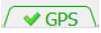
Green text with a green check mark indicates that the data presented in this tab has passed all the internal quality checks.Yellow or orange text and a triangle with an exclamation mark indicates that the data presented in this tab has failed some internal quality checks and the user should evaluate that data.
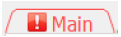
Red text with a red square and exclamation mark indicates that the data presented in this tab has failed some internal quality checks and the failure may have a substantial effect of the resulting discharge. The user needs to address these issues.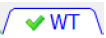
Blue text with any of the other icons indicates that the user has made a change from original settings. If a change is made a message will be added and the user should add a corresponding comment to document the reason for the change. Changing the text to blue provides a reviewer a quick way to see if any changes have been made to the original values.Gray text indicates that the tab is inactive because there are no data to display.
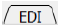
Black text with no icon indicates a feature that has no automated quality assurance checks.2.2 WINDOW TITLE#
The window title shows the QRev version, and the path of the measurement loaded.
2.3 TOOLBAR#
The toolbar functions are available from any tab.
2.3.1 Open#
Open a measurement for processing. Clicking on the open icon in the toolbar opens a measurement selection dialog.
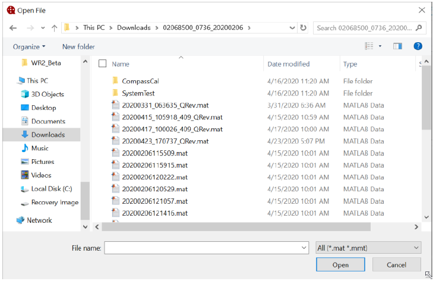
QRev can load data from the following three sources:
SonTek RiverSurveyor Live (RSL) Matlab output (*.mat),
TRDI WinRiver II (WR2) mmt (.mmt), which automatically access the pd0 (.pd0) raw data files, and
Previously save *QRev.mat files.
Select the appropriate file (*_QRev.mat or .mmt) or files (.mat) and QRev will determine the data type selected automatically. If a QRev or mmt file is included in a multifile selection a dialog will notify the user that only one QRev or mmt file can be loaded. Details on loading each file type are discussed in the following sections.
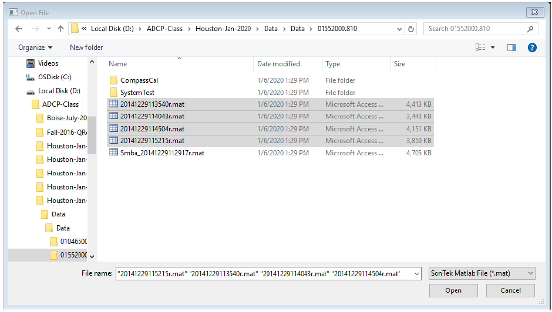
2.3.1.1 Load SonTek Data#
For RSL measurements, moving-bed tests and transects must be exported from RSL using the MATLAB export feature. These files must be output using east, north, up (ENU) coordinates and BT, GGA, or VTG track reference. The files selected by the user from the Open File window should include the *.mat files for all transects in the measurement (Windows commonly does not display the file extension and considers .mat files to be Microsoft Access Table Shortcuts.). QRev will automatically load associated moving-bed tests, system tests, and compass evaluations provided they follow the standard RSL naming and file storage conventions. Moving-bed tests filenames must begin with “Smba_” or “Loop_” and be exported to the MATLAB format (.mat). The system tests and compass calibration must be stored in subfolders of the measurement folder and be named System Test and CompassCal, respectively.
2.3.1.2 Load TRDI Data#
For TRDI ADCPs, select the *.mmt file in the Open File dialog and the transects and supporting data will be loaded from the associated *.pd0 files. The user will be prompted to load only the checked files rather than all files. The default is to load all files.
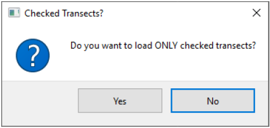
2.3.1.3 Load QRev Data#
The QRev data type is for a measurement that has already been processed and saved by QRev. The file should be a “*_QRev.mat” file. This file contains all the data and settings used in QRev. A dialog is presented to the user asking if they would like to view the measurement as saved or reprocess the measurement using the latest QRev algorithms. If the measurement is simply viewed but a change is made to the measurement the data will be reprocessed using the features of the current version, including the setting for “Use weighted” in the Extrapolation box of the Options dialog (section 2.5).
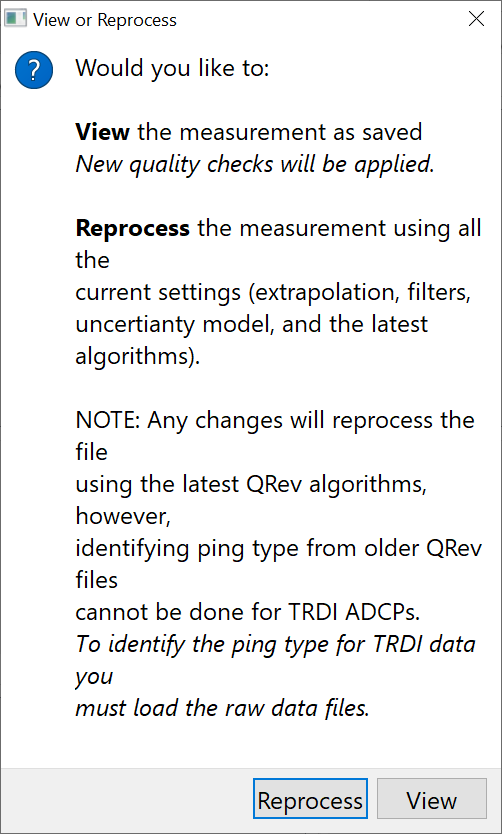
2.3.2 Save#
The Save button allows the user to save a MATLAB file of the measurement as processed in QRev and an XML file that can be loaded into other software. A save file dialog window provides a default name for the MATLAB file, which can be changed by the user prior to saving. QRev will automatically add the “.mat” if not included in a user provided file name. The same name with an xml suffix will be used for the XML file. The default filename is based on the date and time of the save (yyyymmddHHMMSS_QRev.mat or yyyymmdd_HHMMSS_QRev.xml). If the user attempts to overwrite an existing file, a dialog is displayed indicating a file with the same name exits and asking the user if they wish to overwrite the existing file. Upon saving a file a comment is automatically added that includes the date, time, user ID, total discharge, and estimated 95% uncertainty.
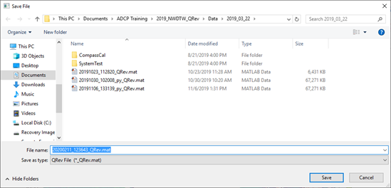
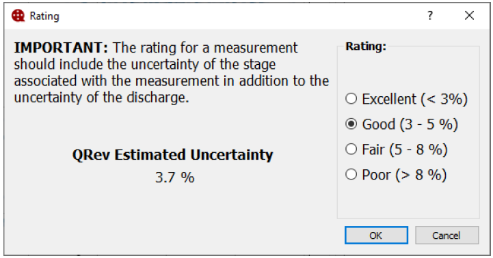
In the Options window (discussed in section 2.5) the user can select to be prompted to assign a rating to the measurement. If the option to prompt for rating is selected a dialog to allow the measurement will be provided. A note indicating that the rating should include the uncertainty of the stage, in addition to the discharge, is displayed to remind the user to consider the stage uncertainty. The uncertainty of the discharge as computed by QRev is presented and the rating associated with that uncertainty is selected by default. The user can select any rating by clicking the radio buttons. If cancel is selected the rating will not be applied but the user can continue to save the measurement.
2.3.3 Options#
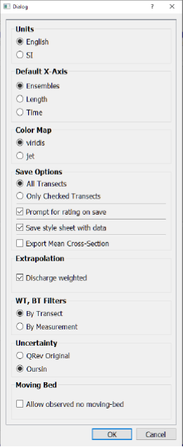
The Options button opens a window that allows the user to select from various options that affect units, display, and computations. Not all options may be available to the user based on agency policy and configuration. It may also be necessary to use the scrollbar on the right to see all options. However, all options are defined herein.
2.3.3.1 Units#
A change to the units can be made at any time. This setting only affects the display of the data and does not have to be consistent with the original units of the loaded data. All data in QRev are stored internally in SI units. The units setting is persistent so that the setting will be retained when QRev is closed and reopened.
2.3.3.2 Default X-Axis#
The Default X-Axis radio buttons allow the user to set the initial variable used for the X-Axis of the various plots in QRev. This setting is saved so that whenever QRev is started the variable selected here will be used for the X-Axis. The initial default is Ensembles. The X-Axis variable can be changed at any time using the shortcut keys (see 2.3.8.5 or 2.4), however, those changes only apply until QRev is closed.
2.3.3.3 Color Map#
The default color map is viridis. Viridis provides a continuous blue to yellow scale that renders detail much more clearly than other palettes. The viridis palette is visible to those with color. The jet color map is provided for those that prefer consistency with the manufacturer’s software. “Jet is very pleasing because it is flashy, colorful, and it does not require you to think about your color scale: even if you have just a few outliers, you still get “all the features” in your plot. You said it yourself: jet almost never lacks contrast. However, this comes at a very high price: jet literally shows things that do not exist. It creates contrast out of nowhere: just change your color scale a little in jet and you should see that the picture is change dramatically. Do the same thing in viridis, and you would merely have the impression that you are putting more or less light on the exact same thing.” (https://stats.stackexchange.com/questions/223315/why-use-colormap-viridis-over-jet)
This option is retained between session, so the user only has to make the choice one time.
2.3.3.4 Save Options#
The Save Options can also be changed at any time.
2.3.3.4.1 All Transects#
Save All Transects is the default and will save information for all transects loaded whether they are checked to be used in the discharge computation or not.
2.3.3.4.2 Only Checked Transects#
Saving only the checked transects will only save information from those transects that are checked to be included in the final discharge and will include all supporting information, such as, system and moving-bed tests. This setting will only be retained until changed or QRev is closed.
2.3.3.5 Prompt for rating on save#
Checking the “Prompt for rating on save” will present the user with a dialog that allows the user to select a rating for the measurement during the save process. See section 2.4 for details on the rating dialog. This setting is persistent and will be retained when QRev is closed and reopened.
2.3.3.6 Style Sheet#
Checking the “Save style sheet with data” option will save a stylesheet called QRevStylesheet.xsl in the folder with the *_QRev.xml file so that the xml file can be viewed using the style sheet. Simply double-click the *_QRev.xml file. The QRevStylesheet is only an example. Users are encouraged to modify the style sheet to meet their needs, but the modified style sheet must be stored in the QRev folder and be named QRevStylesheet.xsl. This setting is persistent and will be retained when QRev is closed and reopened.
2.3.3.7 Export Mean Cross-Section#
If checked, a mean cross section based on the transects used to compute discharge is computed and the coordinates saved in the xml file.
2.3.3.8 Extrapolation#
Checking the “Discharge weighted” option will cause the extrapolation algorithms to use and display median values that have been discharge weighted. The default is to use unweighted medians which was the only method in QRev version 4.23 and earlier. This setting is persistent and will be retained when QRev is closed and reopened.
2.3.3.9 WT, BT Filters#
The automatically computed error and vertical velocity filters for water track (WT) and bottom track (BT) have previously been computed in QRev using data for each individual transect. The result is potentially a different threshold for each transect. Conversely, if a manual setting were applied that setting was applied to all transects uniformly. This option provides the ability to have QRev automatically compute the error and vertical velocity thresholds for WT and BT using all the data in the measurement, resulting in a single set of thresholds that are applied to all the transects.
2.3.3.10 Uncertainty#
QRev has two options for estimating the measurement uncertainty. QRev Original is a simplified approach that was introduced with the first version of QRev and is based on experienced user estimates of typical uncertainties. Oursin is a more comprehensive uncertainty model based on principles presented in the Guide to the expression of Uncertainty in Measurement (GUM, JCGM 2008). Details of the Oursin model are documented in Despax et al. (2021). If the QRev option is chosen, the uncertainty will be displayed in a table.
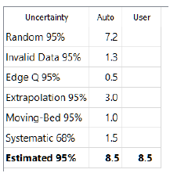
If the Oursin option is chosen, the uncertainty is displayed in a lollipop plot and the details and user overrides are done in a separate uncertainty tab.
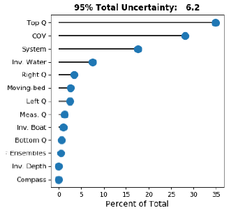
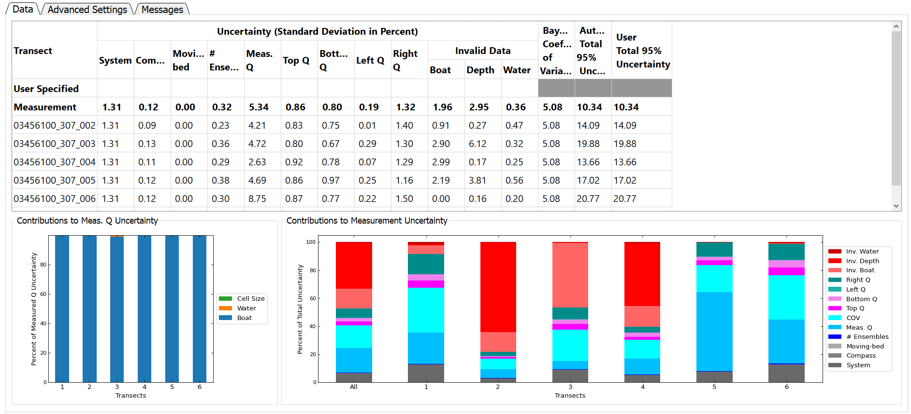
2.3.3.11 Moving Bed#
This option when checked will show a checkbox in the MovBedTst tab that allows the user to certify that they have visually observed the streambed and that there is no moving-bed condition.
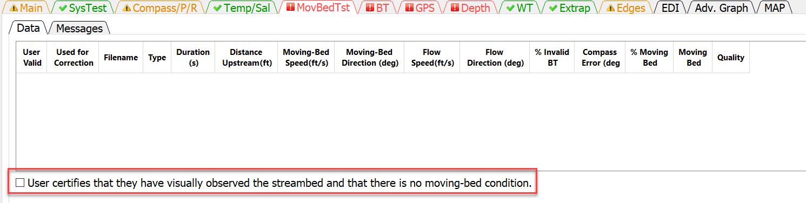
2.3.3.12 MAP Tab#
This option indicates whether the MAP tab is displayed and accessable to the user.
2.3.3.13 Save PDF Summary Report#
If PDFSummary.show is set to True in the QRev.cfg file, the Options Dialog will have a group box for Save PDF Summary Report with three options: No, Prompt on Save, and Always. Selecting No will result in no summary report being created when the measurement is saved in QRev. Selecting Prompt on Save will cause a dialog box to appear when saving a measurement giving the user the option to save or not save a PDF Summary Report. Selecting Always will save a PDF Summary Report everytime the measurement is saved.
2.3.3.14 Date Format#
If DateFormat.show is set to True in teh QRev.cfg file, the Options Dialog will have a group box for Date Format. The currently set format will be displayed in the edit box. The user can change the format by using “y” for year, “m” for month, and “d” for day. Examples include y.m.d, d/m/y, m/d/y or other user defined formats.
2.3.4 Comment#
Clicking on this button will open the comment dialog. The user comment is automatically tagged with the tab that they are viewing, the date, time, and username of the person making the comment. The user should enter comments explaining any observations associated with the data or field conditions or any changes in QRev settings. All comments can be viewed by clicking the Comments tab at the bottom of the Main tab or by clicking on the Messages tab in any of the other tabs. Comments cannot be edited or deleted after they are entered.
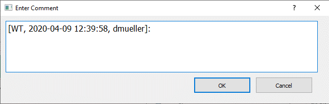
2.3.5 Transect Selection#
The transect selection button opens a dialog that allows the user to select which transects in the measurement will be used to compute the measurement discharge. Check All and Uncheck All buttons are provided at the bottom left of the dialog.
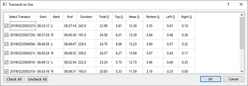
A comment should be made describing why any transect was not used in the computation of discharge for the measurement. If all transects are not used the button icon will change from the green checkmark to an orange checkmark to notify the user that all transects are not being used.
2.3.7 Composite Tracks#
Composite tracks is a feature that will automatically substitute one of the other valid navigation references for the selected navigation reference if the selected reference is invalid. If only BT is available composite tracks is turn off and no selection can be made by the user . The approach used for composite tracks in QRev is summarized in the table below. These settings apply to all transects and cannot be set differently for individual transects. QRev defaults the navigation reference to that used in the raw data. Composite tracks defaults to off.
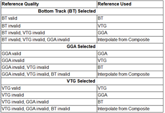
2.3.8 Graphics Controls#
The graphics controls work on all graphics in any of the tabs. For BT, GPS, Depth, WT, and Adv. Graph tabs the home, zoom and pan will keep the plots x-axes synchronized.
2.3.8.1 Rest to Default or Home#
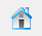
Resets all the graphs on the tab to their original scaling.
2.3.8.2 Zoom Window#
Left-clicking on a graph allows the user to zoom in on a graph using a windowing technique. Right-clicking on a graph allows the user to zoom out on a graph using a windowing technique.
2.3.8.3 Pan#
Allows the user to pan in a graph.
2.3.8.4 Probe Graph for Data Values#
Allows the user to click in a graph to display the graph coordinates of the data point or cursor location. Most graphs will automatically snap to the nearest data points, but others may only provide the cursor location.
2.3.8.5 Show Extrapolated Speed#
Shows the extrapolated speed for the top, bottom, and edges in the final speed color contour plot on the Main, WT, and Adv Graph tabs. This is only applicable if the x-axis type is length. The white dashed line separates the measured from extrapolated data.
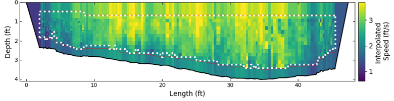
2.3.8.6 X-Axis Variable#
The variable plotted on the x-axis defaults to the ensemble number. However, the variable used for the x-axis can be changed using keyboard shortcuts.
Ctrl-E: Use ensembles for x-axis
Ctrl-L: Use length for x-axis
Ctrl-T: Use time for x-axis
2.3.8.7 Google Earth#
Allows the user to plot the transect’s shiptracks based on GGA data to Google Earth. A kml file is created and opened in Google Earth, if Google Earth has been installed on the computer running QRev. If Google Earth is not installed, nothing will happen.
2.3.8.8 Help#
Opens this help file. Opening the help file can also be achieved using F1.
2.3.8.9 Close#
QRev can be closed by clicking the x at the top right of window. After clicking the x the user will be presented with the following dialog.
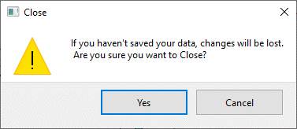
Clicking yes will close QRev. Clicking Cancel returns the user back to QRev and allows the to continue to work or save the file before closing.
2.4 KEYBOARD SHORTCUTS#
The following keyboard shortcuts are supported:
Ctrl-F: Open file
Ctrl-O: Options
Ctrl-S: Save
Ctrl-N: Add note/comment
Ctrl-Q: Select discharge transects
Ctrl-B: Use bottom track
Ctrl-G: Use GGA
Ctrl-V: Use VTG
Ctrl-E: Use ensembles for x-axis
Ctrl-L: Use length for x-axis
Ctrl-T: Use time for x-axis
Ctrl-A: Show correlation and RSSI data below sidelobe on Adv. Graph
Ctrl-U: Show extrapolated speed on final speed contour plot
Up Arrow: Selects the transect above the currently selected transect
Down Arrow: Selects the transect below the currently selected transect
2.5 GRAPH OPTIONS#
Right-clicking on any graph will display the following context menu:
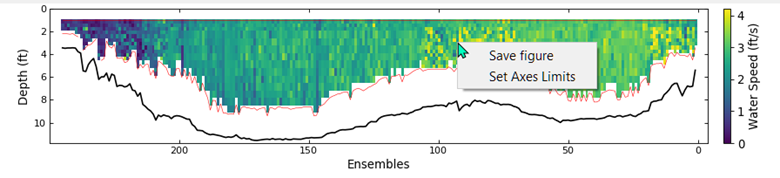
2.5.1 Save Figure#
Clicking Save Figure with open a save dialog allowing the user to save the figure as a png, jpeg, pdf, or svg file.
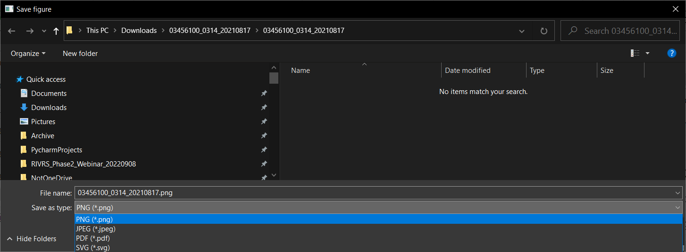
2.5.2 Set Axes Limits#
Clicking Set Axes Limits will open a dialog allowing the user to set the maximum and minimum values for each axes or choose to use the automatic setting.
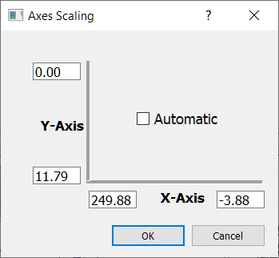
3. MAIN TAB#
The Main tab is always shown when opening a measurement. The Main tab consists of 4 sub-tabs at the top, 2 sub-tabs at the bottom, four graphs, and two tables at the right. Selecting any of the sub-tabs does not change the graphics or two uncertainty tables at the right.
The data displayed in the color contour and ship track graphs are controlled by selecting a transect for display from the tables shown in the Summary, Details, or Settings tabs. When a new measurement is opened the first transect is selected for display in the color contour and ship track graphs. Other transects can be displayed by either clicking on the transect name in the tables shown in the Summary, Details, or Settings tabs or by using the up and down arrow keys to select the desired transect.
The vertical space occupied by each of the three main horizontal sections of the Main tab can be changed by the user by positioning the cursor on the separator line and dragging the line up or down. The manually spaced display will remain until QRev is closed. The default spacing will be restored when QRev is opened again.
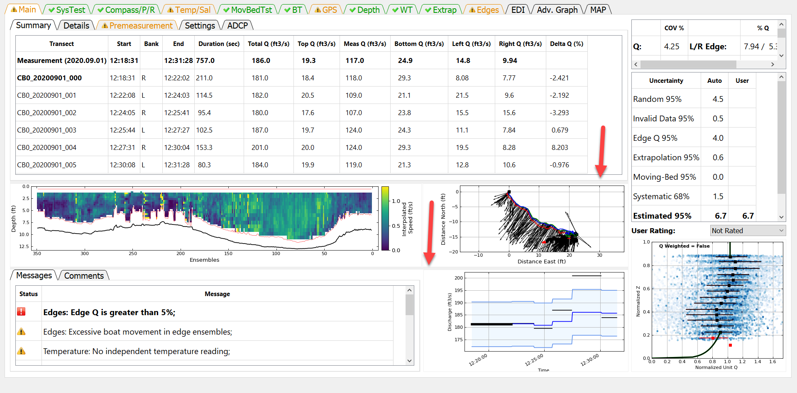
3.1 SUMMARY TAB#
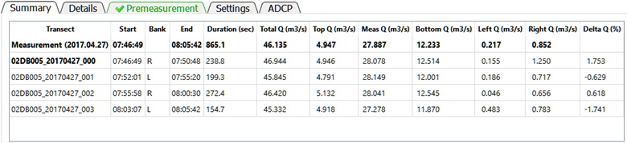
The Summary tab displays a summary of the measurement and transect discharges. This table cannot be edited. The table consists of the following data:
Transect: File name of the transect or Measurement representing the composite of the transects.
Start: Start time of the transect or measurement using the recorded ADCP time.
Bank: The starting bank.
End: End time of the transect or measurement using the recorded ADCP time.
Duration: The duration of the transect or measurement in seconds.
Total Q: The total discharge for the transect or measurement in the user specified units.
Top Q: The estimated top discharge from the extrapolation settings for the transect or measurement in the user specified units.
Meas Q: The discharge measured in the profiling range of the ADCP for the transect or measurement in the user specified units.
Bottom Q: The estimated bottom discharge from the extrapolation settings for the transect or measurement in the user specified units.
Left Q: The estimated discharge in the unmeasured area near the left bank based on the user specified settings for the transect or measurement in the user specified units.
Right Q: The estimated discharge in the unmeasured area near the right bank based on the user specified settings for the transect or measurement in the user specified units.
Delta Q (%): The percent difference of the transect discharge from the mean discharge.
The transect selected for display in the color contour and ship track graphs is identified by a bold typeface. Other transects can be displayed by either clicking on the transect name in the table or by using the up and down arrow keys to select the desired transect. If all the data is not visible in the table scrollbars will be automatically provided and can be used to scroll up or down or left or right as necessary. The column widths can also be changed by placing the cursor in the column labels and dragging the column divider.
3.2 DETAILS TAB#
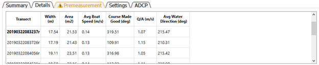
The Details tab provides additional information about the measurement cross-section, boat operation, and water velocity. The table contains the following data: Transect: File name of the transect.
Width: Width of the cross-section in the user specified units. The width is computed as the straight-line distance from the first ensemble to the last ensemble (using the specified navigation reference) plus the left and right edge distances.
Area: The cross-sectional area of the cross-section in user specified units. The cross-sectional area using trapezoidal integration. To compute the cross-sectional area, the ensembles are project onto a line from the first ensemble to the last ensemble using the specified navigation reference. Trapezoidal integration is then used with the straight-line distance between the ensembles and the processed depth to obtain the cross-sectional area of the measured portion of the cross section. The areas for the left and right edges are computed using a coefficient of 0.5 for triangular, 1.0 for rectangular, 0.5 + (custom coefficient – 0.3535) for custom coefficients, and 0.5 for user specified discharge. The edge areas are then added to the measured portion to obtain the total cross-sectional area.
Avg Boat Speed: The average boat speed in user specified units. The average boat speed is computed as the mean of the boat speed (magnitude) for each ensemble.
Course Made Good: The course made good is the straight-line direction from the first ensemble to the last ensemble in azimuth degrees.
Q/A: The mean water velocity in user specified units. The mean water velocity is computed as the discharge divided by the total cross-sectional area.
Avg Water Direction: Average water direction in azimuth degrees. The average water direction is computed as a discharge weighted average of the u and v water velocity components of each depth cell. The unmeasured top, bottom, and left and right edges are not considered. It is possible in some bi-directional flow conditions that this average may result in an inaccurate estimate of the average water direction.
The transect selected for display in the color contour and ship track graphs is identified by a bold typeface. Other transects can be displayed by either clicking on the transect name in the table or by using the up and down arrow keys to select the desired transect. If all the data is not visible in the table scrollbars will be automatically provided and can be used to scroll up or down or left or right as necessary. The column widths can also be changed by placing the cursor in the column labels and dragging the column divider.
3.3 PREMEASUREMENT TAB#
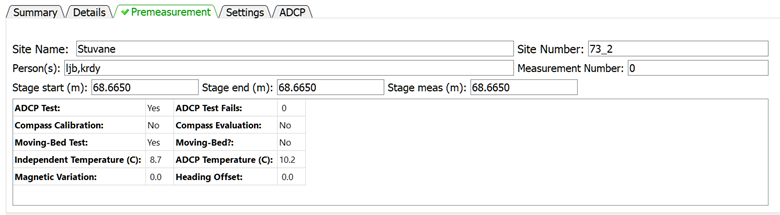
The Premeasurement tab provides information on the completion status and results of procedures that should be completed to ensure an identifiable and defendable measurement.
Site Name: The name of the site measured.
Site Number: The number assigned to the site.
Person(s): Person(s) collecting and/or processing the measurement
Measurement Number: Number assigned to the measurement by user or agency
Stage start: Stage at start of measurement in selected units
Stage end: Stage at end of measurement in selected units
Stage meas: Stage assigned to the measurement in selected units. QRev automatically averages stage start and end to populate stage meas. The user can edit stage meas to a value different from that automatically generated by QRev.
ADCP Test: Was an ADCP system test was performed?
ADCP Test Fails: How many tests within the system test suite failed.
Compass Calibration: Was a compass calibration completed?
Compass Evaluation: The results of the compass evaluation in degrees. The value presented represents the results provided by the manufacturer. Different manufacturers provide different statistics for the results of a compass evaluation.
Moving-Bed Test: Was a valid moving-bed test completed?
Moving-Bed?: Did the results of the moving-bed test indicate a moving bed?
Independent Temperature: Water temperature measured by the user in user specified units. If not temperature is provided the value will be “N/A”.
ADCP Temperature: Water temperature measured by the ADCP. This temperature should be recorded by the user at the time the independent temperature is measured. However, if no ADCP temperature is provided the average ADCP temperature for all transects in the measurement is reported.
Magnetic Variation: Value in degrees used to adjust the internal ADCP compass magnetic heading to true north heading. This value is only applied to the internal ADCP compass.
Heading Offset: Value in degrees used to adjust an external heading source to align with the zero-heading reference of the ADCP. This value is only applied to external heading data.
3.4 SETTINGS TAB#
The Settings tab provides a summary of the non-filter related settings set by the user or automatically by QRev, which are required to compute the measurement discharge. This table cannot be edited. To change any of the values requires the user to go to the associated tab to make the desired change.
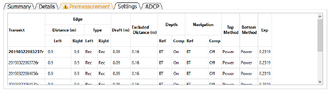
Transect: File name of transect.
Edge Distance Left: Distance to the left edge of water in user specified units.
Edge Distance Right: Distance to the right edge of water in user specified units.
Edge Type Left: Type of computation used to estimate the left edge (Rec – Rectangular edge, Tri – Triangular edge, Cus – Custom edge coefficient, Use – User specified discharge).
Edge Type Right: Type of computation used to estimate the right edge (Rec – Rectangular edge, Tri – Triangular edge, Cus – Custom edge coefficient, Use – User specified discharge).
Draft: Depth of the ADCP below the water surface in user specified units. The draft is measured to the vertical center of the transducers for TRDI ADCPs and the bottom of the ADCP for SonTek ADCPs.
Excluded Distance: The distance below the transducer where data are marked invalid due to ringing or flow disturbance. This value is automatically set to 16 cm for the SonTek RiverSurveyor M9 and to 25 cm for the TRDI Rio Pro.
Depth Ref: Reference data used to determine depth (BT – Profiling beams, VB – Vertical beam, DS – External depth sounder).
Depth Comp: Identifies if composite depths are being used where more than one source of depth reference is available.
Navigation Ref: User selected navigation reference (BT – Bottom track, GGA – GPS GGA sentence, VTG – GPS VTG sentence).
Navigation Comp: Identifies if composite navigation is used where more than one source of navigation reference is available.
Top Method: The top extrapolation method (Power, Constant, 3-Point)
Bottom Method: The bottom extrapolation method (Power, No Slip)
Exp: The extrapolation exponent for power and no slip fit methods.
The transect selected for display in the color contour and ship track graphs is identified by a bold typeface. Other transects can be displayed by either clicking on the transect name in the table or by using the up and down arrow keys to select the desired transect. If all the data is not visible in the table scrollbars will be automatically provided and can be used to scroll up or down or left or right as necessary. The column widths can also be changed by placing the cursor in the column labels and dragging the column divider.
3.5 ADCP TAB#
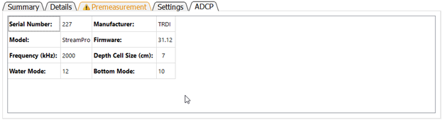
The ADCP tab identifies the ADCP, its characteristics and settings. These data cannot be edited in this table.
Serial Number: Serial number of ADCP as recorded in raw data.
Manufacturer: Manufacturer of ADCP (currently TRDI or SonTek)
Model: Model name of ADCP determined from firmware version and system test results.
Firmware: Firmware version used during data collection.
Frequency (kHz): Approximate frequency of the ADCP. For multi-frequency instruments this will be “Variable”.
Depth Cell Size (cm): The size or range in depth cell size(s) in user specified units.
Water Mode: The water mode used to collect the data. For auto-adaptive instruments that automatically switch water modes this will be “Variable”.
Bottom Mode: The water mode used for bottom tracking. For auto-adaptive instruments that automatically switch bottom modes this will be “Variable”.
3.6 MESSAGES TAB#
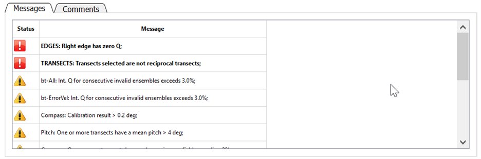
The Messages tab displays messages reported by the automated data quality assessment (ADQA). Each message is identified as a warning or a caution with warnings appearing at the top of the list. A warning has the symbol and the text is bold and preceded by an identifier in uppercase. A caution has the symbol and the text is italic and preceded by an identifier in title case. Warnings are associated with buttons that are red and cautions with buttons that are yellow. The scroll bar on the right allows the user to scroll through messages if the messages exceed the panel size.
3.8 COLOR CONTOUR GRAPH#
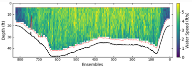
The color contour graph shows the final water and depth data that will be used to compute discharge. The data have been filtered and interpolated. If that data were processed from raw data a red line will be drawn to delineate the top of the topmost depth cells and the side lobe cutoff for the bottom of the depth cells. If the data were loaded from a QRev.mat file processed with QRev prior to version 4 the red line will not be displayed.
3.9 SHIP TRACK GRAPH#
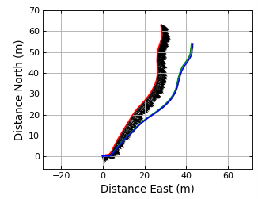
The ship track graph shows the ship track of all available navigation references (Red = BT, Blue = GGA, Green = VTG). The black lines are sticks showing the magnitude and direction of the mean water velocity for each ensemble.
3.10 DISCHARGE GRAPH#
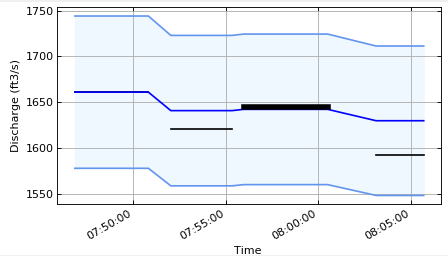
The discharge graph shows the total discharge for each transect as a horizontal line extending from the start time to the end time for each transect. A bold line indicates the currently selected transect. The darker blue line shows the cumulative mean discharge. The shaded area bordered by the lighter blue lines indicates +/- 5% from the cumulative mean discharge.
3.11 EXTRAPOLATION GRAPH#
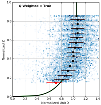
The extrapolation graph shows the normalized depth and discharge for the entire measurement (checked transects only). The blue shaded dots are every depth cell in the measurement. The darker the blue the more discharge is in the ensembled containing that cell (discharge weighted). The black squares show the median values of normalized Q at the mean normalized depth for all data within 5 percent increments of normalized depth. The method used to determine the medians is show in the text in the upper left of the figure. The medians can be computed from unweighted normalized unit Q or discharge weighted normalized unit Q (see section 2.5 Options for choosing this option). The whiskers on the black squares show the range of 50 percent of the data in that median. The selected extrapolation methods are shown with a black line, and the extrapolation methods based on the automatic methods in QRev are shown with a wider green line. QRev defaults to the extrapolation methods based on the automatic selection algorithms; however, the user can choose to override that automatic selection in the Extrap tab.
3.12 UNCERTAINTY#
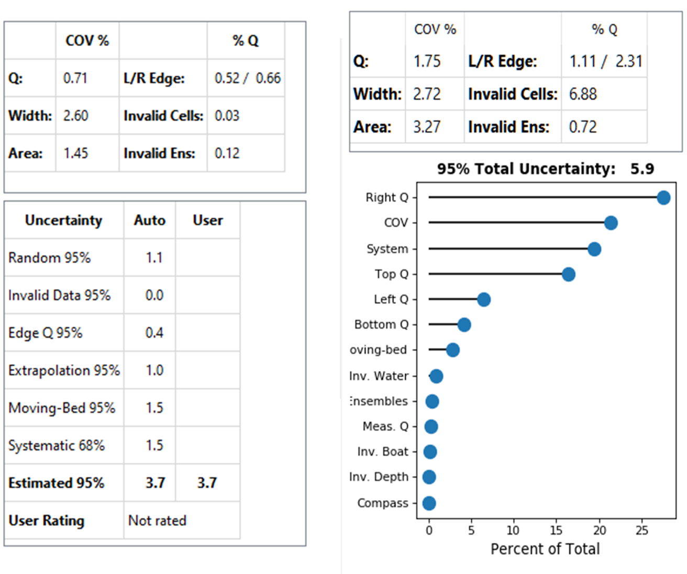
Two tables or a table and a graph are provided with information to assist the user in rating the quality and uncertainty of the measurement. The top table is always shown and provides the coefficient of variation in percent (COV %) for the total discharge, the cross-section width, and the cross-sectional area in the first two columns. The percentage of total discharge (% Q) in the left and right edges (Left/Right Edge), in invalid cells (Invalid Cells), and in invalid ensembles (Invalid Ens.) are provided in the last two columns.
The uncertainty table at the bottom is has two columns for the uncertainty of the various aspects of the measurement and is shown in the QRev uncertainty model is selected. The column labeled “Automatic” contains the values generated by QRev based on assumptions and computations defined in Mueller (2016) and briefly in the following paragraphs. Because the assumptions and computations used to generate the values in the “Automatic” column are simplistic, the values may not accurately represent the uncertainty for all conditions. The column labeled “User” allows the user to override the automatic values with a user supplied value. A value entered by a user should be supported with a comment. The total estimated 95 percent uncertainty value will be recomputed each time a new “user” value is input. The uncertainty categories are defined as follows.
Random Uncertainty— The random uncertainty expands the Q COV to a 95 percent level by applying a coverage factor from the Student’s t-distribution based on the number or degrees of freedom and then dividing by the square root of the number of transects. When only 2 transect comprise a measurement, the theoretical Student’s t approach is abandoned and the 95 percent random uncertainty is computed as Q COV * 3.3.
Invalid Data Uncertainty— The 95 percent uncertainty for invalid data is assumed to be 20 percent of the sum of the percent discharge for invalid cells and ensembles.
Edge Q Uncertainty— The 95 percent uncertainty for the edge discharge is assumed to be 30 percent of the total of the absolute value of the discharge in the edges. The Edge Q Uncertainty accounts for uncertainty in the edge shape, roughness, distance to shore, depth, and water velocity.
Extrapolation Uncertainty— The percent extrapolation uncertainty is computed by computing the percent difference in discharge from the selected extrapolation method to other possible extrapolation methods and averaging the best four options.
Moving-Bed Test Uncertainty— If bottom track is not the navigation reference, the percent moving-bed test uncertainty is assumed to be zero. If bottom track is used and a moving-bed test is valid, the percent moving-bed test uncertainty is assumed to be 1 percent if the test indicates no moving bed is present and 1.5 percent if a moving bed is present. If the moving-bed test has warnings, is invalid, or no moving-bed test was completed, the uncertainty is set to 3 percent.
Systematic Uncertainty— Systematic uncertainty, such as biases in the components of the ADCP and beam misalignment, is assumed to be 1.5 percent.
Estimated 95% Uncertainty— The estimated 95 percent uncertainty uses the values for uncertainty from the discussed categories and combines them as the square root of the sum of the squares. The final value is only a guide because the algorithms for the various sources of uncertainty are only approximations and simple assumptions.
User Rating— The user rating cannot be edited but is assigned when the user saves the measurement and the “Prompt for user rating on save” is checked in the Options dialog (see section 2.5 Options). This rating should reflect the uncertainty of the discharge and stage associated with the measurement.
If Oursin is selected as the uncertainty model, the total uncertainty is displayed in the title of a lollipop plot that shows the relative contributions of the various sources of uncertainty as a percentage of the total uncertainty, sorted in order with the greatest source of uncertainty at the top. For a more detailed discussion of the sources of uncertainty and how they are estimated using the Oursin approach, see the Uncertainty Tab section.
4. SYSTEST TAB#
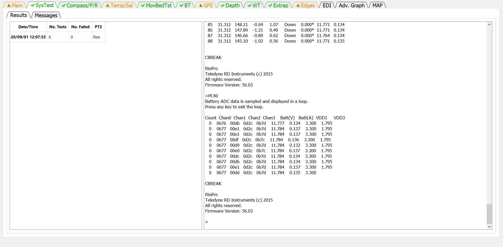
The SysTest tab provides the user the ability to review the results of the system test(s) completed during the measurement. The SysTest tab has two sub-tabs a Results tab and a Messages tab.
4.1 RESULTS TAB#
The results tab has two panels. The panel on the left is a table showing the summary of all system tests completed for this measurement. If more than one system test was completed, the table would have multiple rows. The table identifies the system test by the date and time of the test. Each system test consists of a varying number of component tests. The number of component tests comprising the system test is shown in the second column. The third column shows the number of component tests that have failed. If the ADCP is from TRDI an additional evaluation of the PT3 test is made and receives a Pass or Fail. If the ADCP is from SonTek then the PT3 column will show N/A.
The panel on the right shows the text output from the system test selected in the table at the left. The Date/Time of the test displayed is in Bold typeface in the table on the left. If multiple system tests were completed, the user can select the test to be shown by clicking on the date/time of the desired system test in the table on the left. Scroll bars will be automatically displayed on the right panel if the output from the test exceeds the height or width of the panel.
4.2 MESSAGES TAB#
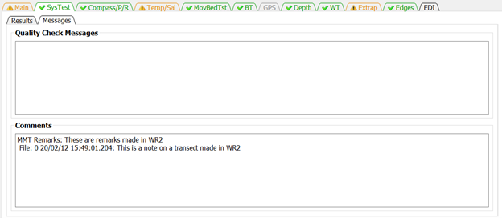
The Messages tab has two panels. The top panel shows any messages generated by the ADQA associated with the system test(s). The bottom panel shows all the comments associated with the measurement.
5. COMPASS/P/R TAB#
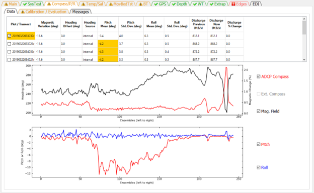
The Compass/P/R tab presents the ADCP heading, pitch, and roll data and results of the compass calibration and evaluation. This tab has three sub-tabs Data, Calibration / Evaluation, and Messages.
5.1 DATA#
The Data tab consists of a table, two graphs, and checkbox controls for the two graphs.
The table at the top provides a summary of settings and heading, pitch, and roll data and highlights areas where the ADAQ found potential issues. Clicking the magnetic variation, heading offset, and heading source columns opens a dialog that allows each of these settings to be changed for that transect or for all transects. The Heading Offset and Heading Source columns are only active if external heading data, such as, from a GPS Compass is included in the measurement.
If a cell of the table is colored orange or red by the automated data quality assessment, placing the cursor on that cell will display a tooltip indicating the quality issue.
The magnetic variation is only applied to the internal compass.
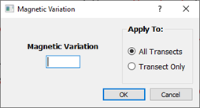
The heading offset is only applied to the external compass.
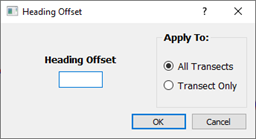
The heading source option is only available if external heading data were collected. If the compass data are unreliable and bottom track is used for the navigation reference the compass can be turned off (discharge computations based on bottom track do not require a compass heading).
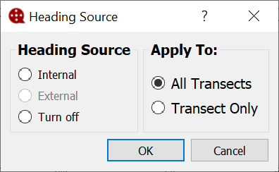
Applying the magnetic variation, heading offset, or heading source to all transect also applies the setting to the moving-bed test transects.
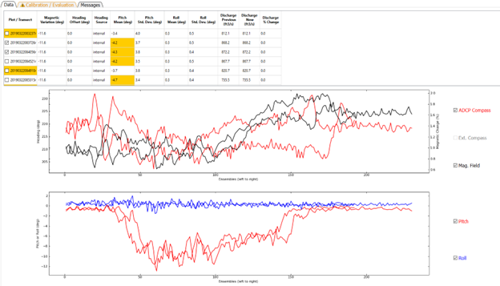
The heading time series graph displays the compass heading from either the internal compass or an external compass or both. For RiverSurveyors the change in magnetic field strength compared to the magnetic field strength during calibration can also be shown and will have its scale along the right axis. Data are always displayed by ensemble from left to right. The table at the top serves as the control for what transect is graphed. Clicking on a row in the Plot / Transect column will graph the data from that transect. To overlay data from multiple transects, the user can right-click to add or remove additional transects from the graphs. Check marks next to the transect file names indicate the transect(s) graphed.
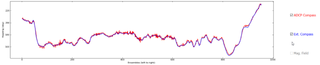
The user can check or uncheck the data types available to change which data types are displayed. The Ext. Compass (external compass) and Mag. Field (magnetic field percent difference) checkboxes are only active if associated data are present in the measurement.
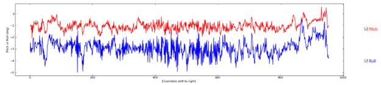
The pitch / roll time series displays the pitch (red) and roll (blue) from the internal sensors. Data are always displayed by ensemble from left to right.
5.2 CALIBRATION / EVALUATION#
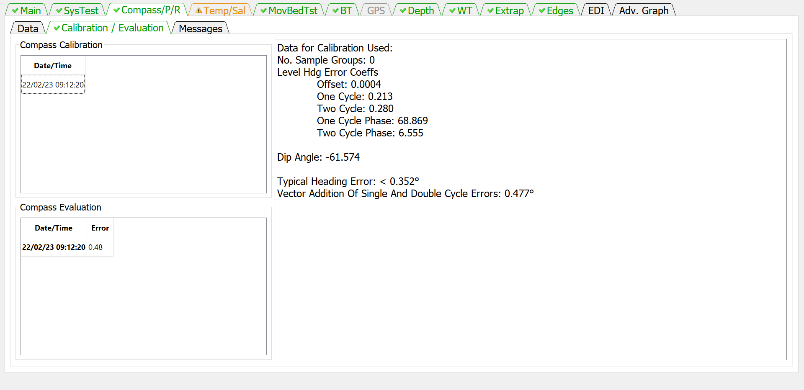
The Calibration / Evaluation tab displays the results of the compass calibration and evaluation, if available. The Compass Calibration table lists the date and time of each calibration conducted during the measurement. Clicking on a row in the Date/Time column will display the results of the calibration in the right panel. The Compass Evaluation table lists the data, time, and results of each evaluation conducted during the measurement. Clicking on a row in the Data/Time column will display the results of the evaluation in the right panel. SonTek ADCPs with the G2 compass there is no evaluation data. For SonTek ADCPs with the G3 compass the evaluation results are taken from the calibration as there is no separate evaluation.
5.3 MESSAGES#
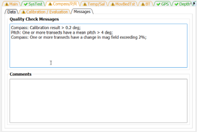
The Messages tab has two panels. The top panel shows any messages generated by the ADQA associated with the compass, pitch, and roll sensors. The bottom panel shows all the comments associated with the measurement.
6. TEMP/SAL TAB#
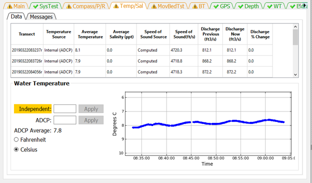
The Temp/Sal tab has two sub-tabs Data and Messages. The Data tab displays the temperature, salinity, and speed of sound settings and the time series of the ADCP temperature readings.
6.1 DATA#
The Water Temperature panel displays a time series of the temperature readings for all the transects in the measurement. This is useful to determine if the ADCP has reached equilibrium water temperature prior to the start of the measurement and to identify any substantial temperature changes in the cross section. USGS policy requires an independent temperature reading be made, recorded, and compared to a simultaneous temperature reading from the ADCP. These temperature readings can be entered in the edit boxes for Independent and ADCP and the appropriate units selected from the radio buttons. If the ADCP temperature is not provided the ADCP average temperature will be compared to the Independent temperature. If no Independent temperature is provided, the ADAQ will flag this violation of policy. If the labels are colored orange or red by the automated data quality assessment, placing the cursor on that label will display a tooltip indicating the quality issue. The table at the top of the Data tab displays the speed of sound, the parameters that affect the speed of sound, and allows the user to make changes directly to the speed of sound or to the parameters. The Temperature Source can be changed by clicking in a row under the Temperature Source column. This will open a dialog that allows the user to manually set a water temperature or to use the ADCP internal sensor to determine the water temperature for the purpose of computing the speed of sound.
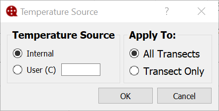
The salinity can be changed by clicking in a row in the Salinity column of the table.
Clicking in the Speed of Sound Source column allows the user to enter a speed of sound directly or to allow the program to compute the speed of sound from the provided parameters.
The three discharge columns at the right of the table show the previous, current, and percent change in discharge based on changes made to the speed of sound and its parameters or to a change in Navigation Reference made while this tab was displayed.
6.2 MESSAGES#
The Messages tab has two panels. The top panel shows any messages generated by the ADQA associated with the speed of sound and associated parameters and policies. The bottom panel shows all the comments associated with the measurement.
7. MOVBEDTST TAB#
The MovBedTst tab allows the user to review moving-bed test results, mark tests invalid, use GPS as the test reference, and override the automatic determination of which moving-bed tests should be used to correct the measured discharge. The MovBedTst tab consist of two additional tabs Data and Messages.
7.1 DATA#
When the Data tab is first displayed, the first file is automatically displayed in the graphs at the bottom of the window. To display a different file, click in the table on the filename to be displayed or use the up or down cursor keys to change the displayed test. The filename of the moving-bed test displayed is shown immediately above the graphs. The graphs at the bottom change depending on whether the displayed test is a loop test or a stationary test.
Three graphs are shown for the stationary test. The graph at the left is a cumulative average of the moving-bed speed. Red dots indicate ensembles where the bottom track was invalid. For a good test the blue line should reach equilibrium (nearly horizontal) by the end of the test. The middle graph is the shiptrack produced by plotting the upstream or cross stream movement based on bottom track relative to the direction of flow for each ensemble. The graph on the right is a ship track plot of all available references.
Two graphs are shown for a loop test. The graph on the left is the boat speed during the loop. The boat speed should be as uniform as practical. The graph on the right is a ship track graph that shows the ship track of all available navigation references (Red = BT, Blue = GGA, Green = VTG). The black lines are sticks showing the magnitude and direction of the mean water velocity for each ensemble. A black square identifies the beginning of the loop. What navigation references shown in the graph are controlled by the checkboxes at the top of the graph.
Definition of Table Columns
User Valid: The User Valid column lets the user identify tests that the user considers valid moving-bed tests. QRev assumes that all loaded tests are valid tests; for example, tests that were completed using proper technique. QRev automatically selects the moving-bed test used to determine if there is a moving-bed and to correct for a moving-bed if necessary. The algorithm used by QRev will use the last valid loop test or in the absence of a valid loop test, all valid stationary tests. If a test is not valid because of an aborted test or because of something that happened during the test that indicates the test should not be used, the user should uncheck that test. Unchecking the User Valid column tells QRev that this test should not be used to determine if a moving-bed condition exists or to correct the discharge. Marking a test invalid automatically opens the comment dialog so the user can document the reason this test was not valid.
Used for Correction: The Use for Correction column identifies if the test or test(s) will be used to correct the discharge for a moving-bed condition. If bottom track is the navigation reference and a moving bed exists, QRev will automatically select the moving-bed test to use to correct the final discharge; however, the user can override the selection by unchecking the Used for Correction. If the user overrides the Used for Correction by unchecking it, a comment dialog will open, so they can document the reason for not using the correction.
If the user selects to use a moving-bed test that has Errors, the QRev will warn the user but allow the user to override the errors.
Use GPS for Test: If GPS data are available, this column will be displayed and allow the user to use GPS as the fixed reference against which the bottom track’s potential upstream movement is compared. If GPS data are not available, this column is not displayed.
Filename: The filename containing the moving-bed test. NOTE: The test automatically selected for determining if there is a moving-bed and/or correcting for it are in bold.
Type: The type of test (Loop or Stationary).
Duration: The duration of the test in seconds.
Distance Upstream: The distance the test showed the boat moved upstream from its starting location. This distance is the closure error for a loop test.
Moving-Bed Speed: The computed speed of the bed (Distance Upstream/Duration).
Moving-Bed Direction: The direction (azimuth) the boat moved relative to its starting location. For a moving-bed condition, this value should be approximately 180 degrees from the flow direction. This value is only computed for the loop moving-bed test.
Flow Speed: The magnitude of the average water velocity vector for all data in the test.
Flow Direction: The direction (azimuth) of the average water velocity vector for all data in the test. This value is only computed for the loop moving-bed test.
% Invalid BT: The percentage of ensembles that have invalid bottom track data.
Compass Error: The difference in the flow direction between the outgoing and returning portions of the loop moving-bed test.
% Moving Bed: The ratio of the moving-bed speed to flow speed expressed as a percentage.
Moving Bed: Using the criteria for a moving-bed condition documented in Mueller and others (2013), QRev determines if a moving-bed condition exists. If the quality of the moving-bed test results in errors, this field is set to Unknown because the moving-bed test is unreliable.
Quality: QRev completes a quality assessment of every moving-bed test. Based on criteria documented in Mueller (2016), the quality of the measurement is set to Good if all the quality checks pass, to Warnings if some quality checks fail but are not critical failures, or to Errors if critical errors in the moving-bed test are identified.
7.2 MESSAGES#
The Messages tab has two panels. The top panel shows any messages generated by the ADQA associated with moving-bed test. These messages include details about each test not included in the messages shown on the Main tab. The bottom panel shows all the comments associated with the measurement.
8. BT TAB#
The BT tab allows the user to evaluate the bottom track data for each transect and change the filter settings. Filter settings are applied to all transects and cannot be set for individual transects.
8.1 DATA#
The Data tab provides the information and filter settings to allow the user to evaluate and optimize the bottom track data.
8.1.1 Table#
The table at the top of the tab allows the user to select which transect to graph (by clicking on the desired row), provides information on the percentage of ensembles that have been determined to be invalid by the various filters, and shows the effect of a filter change on the computed discharge. Cells in the table contain color codes associated with cautions or warnings generated from the ADQA. This table does not have any editable cells. The columns in the table are as follows:
Filename: Filename of the transect.
Number of Ensembles: Total number of ensembles in the transect.
Beam % <4 : Percent of ensembles that have less than 4 valid beams.
Total % Invalid: Percent of ensembles with invalid bottom track velocity.
Orig Data % Invalid: Percent of ensembles that had invalid bottom track velocity prior to any filtering.
<4 Beam % Invalid: Percent of ensembles with valid bottom track but less than 4 beams for which the bottom track velocity has been determined to be invalid by the 3 Beam Solutions Filter.
Error Vel % Invalid: Percent of ensembles that have been determined to be invalid due to filtering based on the bottom track error velocity.
Vert Vel % Invalid: Percent of ensembles that have been determined to be invalid due to filtering based on the bottom track vertical velocity.
Other % Invalid: Percent of ensembles that have been determined to be invalid due to filtering using other filters.
Discharge Previous: Total discharge prior to most recent filter change.
Discharge Now: Total discharge after applying the most recent filter change. If no filters have been changed, the discharge now will equal the discharge previous.
Discharge % Change: The percent difference between the discharge previous and the discharge now due to the last filter change.
If a cell of the table is colored orange or red by the automated data quality assessment, placing the cursor on that cell will display a tooltip indicating the quality issue.
8.1.2 Upper Graph#
The data displayed in the upper graph are controlled by the radio buttons at the top of the graph. Blue dots indicate valid data and blue dots with red circles indicate invalid data. Examples of the options are:
3 Beam Solutions:
Error Velocity:
Vertical Velocity:
Other (Other filter set to Off)
Other (Other filter set to Smooth)
Source (INT – Interpolated, INV – Invalid)
8.1.3 Lower Graph#
The lower graph displays the boat speed vs ensembles. The boat speeds shown are controlled by the checkboxes associated with the ship track graph. The color of the line identifies the boat speed source which is defined by the color of the checkboxes associated with the ship track graph. In addition, the location and cause of invalid data are indicated by black letters at the appropriate ensembles. O for invalid original data, B for beam filter, E for error velocity filter, V for vertical velocity filter, and S for other filter.
8.1.4 Ship Track Graph#
The graph on the right is a ship track graph that shows the ship track of all available navigation references (Red = BT, Blue = GGA, Green = VTG). The black lines are sticks showing the magnitude and direction of the mean water velocity for each ensemble. What navigation references shown in the graph are controlled by the checkboxes at the top of the graph.
8.1.5 Beam Filter#
The Beam Filter panel shows the current setting and allows the user to change the filters as necessary from the following options:
Auto: (Default) Evaluates 3 beams solutions using neighboring data to determine the validity of the 3 beam solution. Details are documented in Mueller (2016).
Allow: Allows 3 beam solutions
4 Beam: Allows only 4 beam solutions
8.1.6 Error Velocity Filter#
The Error Velocity Filter panel shows the current setting and allows the user to change the filters as necessary from the following options:
Auto: (Default) Use the variance of the error velocity data to automatically set threshold limits for each transect. Details are documented in Mueller (2016).
Manual: Allows the user to enter a threshold value that will be applied to all transects in the measurement.
Off: No error velocity filter is applied.
The frequency of the bottom track ping is represented by different colors and symbols for multi-frequency ADCPs. Using the Auto filter, the filter thresholds are computed separately for each frequency.
8.1.7 Vertical Velocity Filter#
The Vertical Velocity Filter panel shows the current setting and allows the user to change the filters as necessary from the following options:
Auto: (Default) Use the variance of the vertical velocity data to automatically set threshold limits for each transect. Details are documented in Mueller (2016).
Manual: Allows the user to enter a threshold value that will be applied to all transects in the measurement.
Off: No error velocity filter is applied.
The frequency of the bottom track ping is represented by different colors and symbols for multi-frequency ADCPs. Using the Auto filter, the filter thresholds are computed separately for each frequency.
8.1.8 Other Filter#
The Other Filter panel shows the current setting and allows the user to change the filters as necessary from the following options:
Off: (Default) No spike detection type filter is applied.
Smooth: A locally weighted scatterplot smoothing (LOWESS) filter with a dynamic moving window is applied. Details are documented in Mueller (2016).
8.2 MESSAGES TAB#
The Messages tab has two panels. The top panel shows any messages generated by the ADQA associated with bottom tracking. The bottom panel shows all the comments associated with the measurement.
9 GPS TAB#
The GPS tab allows the user to evaluate the GGA and VTG data for each transect and change the filter settings. Filter settings are applied to all transects and cannot be set for individual transects.
9.1 DATA#
9.1.1 Table#
The summary table allows the user to select the transect to be graphed (by clicking on the desired row) and provides information about the quality of the GPS data. This table has no editable cells. The columns in the table are defined as follows:
Filename: Filename of the transect.
Number of Ensembles: Total number of ensembles in the transect.
GGA % Invalid: Percentage of ensembles with invalid GGA data.
VTG % Invalid: Percentage of ensembles with invalid VTG data.
Diff. Qual. % Invalid: Percentage of ensembles with data quality less than minimum quality filter.
Alt. Change % Invalid: Percentage of ensembles determined invalid by altitude filter.
HDOP % Invalid: Percentage of ensembles determined invalid by HDOP filter
Sat Chg %: Percentage of ensembles affected by a satellite change.
Discharge Previous: Total discharge prior to most recent filter change.
Discharge Now: Total discharge after applying the most recent filter change. If no filters have been changed, the discharge now will equal the discharge previous.
Discharge % Change: The percent difference between the discharge previous and the discharge now due to the last filter change.
If a cell of the table is colored orange or red by the automated data quality assessment, placing the cursor on that cell will display a tooltip indicating the quality issue.
9.1.2 Upper Graph#
The data displayed in the upper graph are controlled by the radio buttons at the top of the graph. Blue dots indicate valid data and blue dots with red circles indicate invalid data. Examples of the options are:
Quality:
0: no position fix
1: autonomous
2: differential correction (DGPS)
4: real-time kinematic (RTK) 5—float RTK
Altitude:
HDOP (Horizontal Dilution of Precision, lower is better, should be less than 4):
# Sats:
Other (Other filter set to Off):
Other (Other filter set to Smooth):
Source:
9.1.3 Lower Graph#

The lower graph displays the boat speed vs ensembles. The boat speeds shown are controlled by the checkboxes associated with the ship track graph. The color of the line identifies the boat speed source which is defined by the color of the checkboxes associated with the ship track graph. In addition, the location and cause of invalid data are indicated by black letters at the appropriate ensembles. O for invalid original data, Q for quality filter (GGA only), A for altitude filter (GGA only), H for HDOP filter, S for other filter
9.1.4 Ship Track Graph#
The graph on the right is a ship track graph that shows the ship track of all available navigation references (Red = BT, Blue = GGA, Green = VTG). The black lines are sticks showing the magnitude and direction of the mean water velocity for each ensemble. What navigation references shown in the graph are controlled by the checkboxes at the top of the graph.
9.1.5 Minimum Quality (GGA) Filter#
Applies to GGA data only and allows the user to set the minimum allowable differential correction quality.
1: Autonomous
2: (Default) Differential
4+: RTK
9.1.6 Altitude Change (GGA) Filter#
Applies to GGA data only.
Auto: (Default) The threshold for altitude change is set to 3 meters.
Manual: The user can enter a user specified threshold. Off—No altitude is applied.
9.1.7 HDOP Filter#
Applies to GGA and VTG data, if GGA data are available.
Auto: (Default) Sets the maximum allowable HDOP to 4.0 and the maximum allowable change in HDOP to 3.0.
Manual: Allows the user to specify the maximum allowable HDOP and the maximum allowable change in HDOP.
Off: No HDOP filter is applied.
9.1.8 Other Filter#
Sets the smooth filter to on or off.
Off: (Default) No other filter is applied.
Smooth: A smooth filter is applied to identify spikes in the boat speed.
9.2 GPS – BT#
The GPS – BT tab allows the user to evaluate how closely the GPS data correlate with the bottom track data.
9.2.1 Table#
The table presents the following data:
Filename: Filename of the transect.
Lag (sec): The lag in seconds between the boat speed computed using GGA or VTG and bottom track computed using a correlation between the respective boat speeds. This allows the user to evaluate any delays in the GPS data caused by the receiver, incorrect baud rates, serial interface issues, or computer speed. See example in previous figure.
BMG-GMG mag: The magnitude of the vector drawn from the end of the GPS track to the end of the bottom track.
BMG_GMS dir (deg): The direction of the vector drawn from the end of the GPS track to the end of the bottom track
GC-BC (deg): The angle between the GPS track and the bottom track.
BC/GS: The ratio of the distance made good for the bottom track divided by the difference made good of the GPS track.
9.2.2 Lower Graph#
The lower graph displays the boat speed vs ensembles. The boat speeds shown are controlled by the checkboxes associated with the ship track graph. The color of the line identifies the boat speed source which is defined by the color of the checkboxes associated with the ship track graph. In addition, the location and cause of invalid data are indicated by black letters at the appropriate ensembles. O for invalid original data, Q for quality filter (GGA only), A for altitude filter (GGA only), H for HDOP filter, and S for other filter.
9.2.3 Ship Track Graph#
The graph on the right is a ship track graph that shows the ship track of all available navigation references (Red = BT, Blue = GGA, Green = VTG). The black lines are sticks showing the magnitude and direction of the mean water velocity for each ensemble. What navigation references shown in the graph are controlled by the checkboxes at the top of the graph.
9.3 MESSAGES#
The Messages tab has two panels. The top panel shows any messages generated by the ADQA associated with GPS data. The bottom panel shows all the comments associated with the measurement.
10. DEPTH TAB#
The Depth tab allows the user to review the measured depths from each beam and the final processed cross-section. The user can also change the primary depth reference and indicate whether to use composite depths. QRev defaults to using inverse depth weighting to compute the mean depth when the 4 slant beams are used. The user can also change the filter type to try and eliminate unreasonable and erroneous spikes in the data.
10.1 DATA#
10.1.1 Table#
The summary table allows the user to select which transect is displayed in the graphs (by clicking on the desired row), provides information on beams with invalid depths, and allows the user to change the draft.
The table displays the following information:
Filename: Filename of the transect.
Draft: Distance from the water surface to the transducers.
# Ensembles: Number of ensembles in the transect.
Beam 1 % Invalid: Percent of ensembles where the depth in beam 1 is invalid.
Beam 2 % Invalid: Percent of ensembles where the depth in beam 2 is invalid.
Beam 3% Invalid: Percent of ensembles where the depth in beam 3 is invalid.
Beam 4 % Invalid: Percent ensembles where the depth in beam 4 is invalid.
Vertical % Invalid: Percent of ensembles where the depth in the vertical beam is invalid.
Depth Sounder % Invalid: Percent of ensembles where the depth from the external depth sensor is invalid.
Discharge Previous: Total discharge prior to most recent filter change.
Discharge Now: Total discharge after applying the most recent filter change. If no filters have been changed, the discharge now will equal the discharge previous.
Discharge % Change: The percent difference between the discharge previous and the discharge now due to the last filter change.
Clicking in the draft column will open a dialog that allows the user to enter a new draft and apply that draft to all transects or only the transect for which the draft was clicked.
If a cell of the table is colored orange or red by the automated data quality assessment, placing the cursor on that cell will display a tooltip indicating the quality issue.
10.1.2 Graphics#
The top graph displays the depth recorded for each beam. The user can change which beams are displayed using the check boxed on the right. Red circles indicate that the depth filter has determined that depth to be invalid.
The bottom graph shows the final cross-section that will be used to compute discharge. Using the checkboxes at the right the user can compare the final cross-section to the 4-beam average, vertical beam, or depth sounder.
10.1.3 Depth Reference#
The Depth Reference is a popup menu that allows the user to select from all available depth sources.
4 Beam Avg: (Default if no vertical beam or depth sounder) The ensemble depth is computed as the average of the 4 slant beams.
Comp 4 Beam Preferred: (Default if vertical beam or depth sounder available) The ensemble depth is computed as the average of the 4 slant beams, but if that results in an invalid depth, other available valid depth sources will be substituted according to the priority defined in the table below.
Vertical: The depth from the vertical beam is used as the ensemble depth.
Comp Vertical Preferred: The ensemble depth is the vertical beam depth, but if the vertical beam depth is invalid, other available valid depth sources will be substituted according to the priority defined in the table below.
Depth Sounder: The depth from an external depth sounder is used as the ensemble depth.
Comp DS Preferred: The ensemble depth is the external depth sounder depth, but if the depth from the external depth sounder is invalid, other available valid depth sources will be substituted according to the priority defined in the table below:
BT: average depth from four slant beams
DS: depth from external depth sounder
VB: depth from vertical beam
10.1.4 BT Averaging Method#
BT Beam Averaging determines if the average depth from the 4 slant beams is computed using a simple average or an inverse depth-weighted method (IDW). The inverse depth-weighted method is preferred and the QRev default. However, to allow duplication of RSL computations, the simple average option is available.
10.1.5 Filter#
The two options available to filter out spikes in the depths are the method used in WR2 and a method based on a LOWESS smooth. The method used in WR2 will tend to filter out the lowest (deepest) data because the method was designed to filter out multiple reflections. The LOWESS smooth filter only works well with continuous data. Gaps in the data can cause the LOWESS smooth filter to miss what appear to be obvious spikes. The filter defaults to Smooth but can also be turned off.
10.2 MESSAGES#
The Messages tab has two panels. The top panel shows any messages generated by the ADQA associated with depth data. The bottom panel shows all the comments associated with the measurement.
11 WT TAB#
The WT Filters button opens a window that allows the user to evaluate the water track data for each transect and change the filter settings. Filter settings are applied to all transects and cannot be set for individual transects.
11.1 DATA#
11.1.1 Table#
The Summary Table allows the user to select which transect to graph (by clicking on the desired row), provides information on the percentage of depth cells that have been determined to be invalid by the various filters, and shows the effect of a filter change on the computed discharge. Cells in the table contain color codes associated with cautions or warnings generated from the ADQA. No editable cells are in this table. The columns in the table are:
Filename: Filename of the transect.
Number of Depth Cells: Total number of depth cells in the transect.
Beams % <4: Percentage of depth cells that had valid water track in less than 4 beams.
Total % Invalid: Percentage of depth cells with invalid water track velocity.
Orig Data % Invalid: Percentage of depth cells that had invalid water track velocity prior to any filtering.
<4 Beams % Invalid: Percentage of depth cells with valid water track in less than 4 beams for which the water track velocity has been determined to be invalid.
Error Vel % Invalid: Percentage of depth cells that have been determined to be invalid due to filtering based on the water track error velocity.
Vert Vel % Invalid: Percentage of depth cells that have been determined to be invalid due to filtering based on the water track vertical velocity.
Other % Invalid: Percentage of depth cells that have been determined to be invalid due to filtering using other filters. Currently, (2015) other filters are not implemented.
SNR % Invalid: Percentage of depth cells that have been determined to be invalid due to filtering of the signal-to-noise ratio (SNR) range. This filter applies to SonTek data only.
Discharge Previous: Total discharge prior to most recent filter change.
Discharge Now: Total discharge after applying the most recent filter change. If no filters have been changed, the discharge now will equal the discharge previous.
Discharge % Change: The percent difference between the discharge previous and the discharge now due to the last filter change.
If a cell of the table is colored orange or red by the automated data quality assessment, placing the cursor on that cell will display a tooltip indicating the quality issue.
11.1.2 Upper Graph#
The display in the upper graph is controlled by the radio buttons across the top.
The Contour No Interp option displays a color contour of the water speed with all the filters applied but no water data interpolation. Red lines indicate the top of the available bins and the side lob
The Beams Used option displays a time series graph of the number of beams used in the water track solution. Red circles indicate data that have been filter to be invalid (see Beam Filter).
The Error Vel. Options displays the error velocity for every cell with a 4-beam solution. Red circles indicate data that have been determined to be invalid by the error velocity filter.
The Vertical Vel. option displays the vertical velocity for every cell. Red circles indicate data that have been determined to be invalid by the vertical velocity filter.
The SNR option displays the range of average SNR above the side lobe cutoff among the beams for each ensemble. Red circles indicate data that have been determined to be invalid by the SNR filter.
The Speed option displays a time series of the ensemble average water speed and boat speed. Invalid data are indicated by letters on the appropriate ensembles: O-invalid original data, E-error velocity filter, V-vertical velocity filter, B-beam filter, R-SNR filter.
11.1.3 Lower Graph#
The lower graph is a color contour showing the measured and interpolated data. These are the data that will be used to compute discharge. If that data were processed from raw data a red line will be drawn to delineate the top of the topmost depth cells and the side lobe cutoff for the bottom of the depth cells. If the data were loaded from a QRev.mat file processed with QRev prior to version 4 the red line will not be displayed.
11.1.4 Ship Track Graph#
The graph on the right is a ship track graph that shows the ship track of all available navigation references (Red = BT, Blue = GGA, Green = VTG). The black lines are sticks showing the magnitude and direction of the mean water velocity for each ensemble. What navigation references shown in the graph are controlled by the checkboxes at the top of the graph.
11.1.5 Excluded Distance#
The Excluded Distance is the distance below the transducer for which measured WT data will not be used. This value defaults to zero except for:
RiverSurveyor M9: default = 16 cm (U.S. Geological Survey, 2014)
TRDI RioPro: default = 25 cm
11.1.6 3 Beam Solutions#
The Beam Filter panel shows the current setting and allows the user to change the filters as necessary from the following options:
Auto: (Default) Evaluates 3 beams solutions using neighboring data to determine the validity of the 3 beam solution. Details are documented in Mueller (2016).
Allow: Allows 3 beam solutions
4 Beam Only: Allows only 4 beam solutions
11.1.7 Error Velocity Filter#
The Error Velocity Filter panel shows the current setting and allows the user to change the filters as necessary from the following options:
Auto: (Default) Use the variance of the error velocity data to automatically set threshold limits for each transect. Details are documented in Mueller (2016).
Manual: Allows the user to enter a threshold value that will be applied to all transects in the measurement.
Off: No error velocity filter is applied.
The different types of water pings are shown in the plots using different colors and symbols. The thresholds computed using the Auto setting are computed and applied individually for each ping type. If older QRev files are loaded for TRDI ADCPs and not recomputed, the display will show blue dots with no designation of ping type (ping type cannot be determined from the data save is those files). If older QRev files are loaded for SonTek ADCPs and not recomputed, the display will show the different ping types but the filter thresholds will have been computed without regard to ping type.
11.1.8 Vertical Velocity Filter#
The Vertical Velocity Filter panel shows the current setting and allows the user to change the filters as necessary from the following options:
Auto: (Default) Use the variance of the vertical velocity data to automatically set threshold limits for each transect. Details are documented in Mueller (2016).
Manual: Allows the user to enter a threshold value that will be applied to all transects in the measurement.
Off: No error velocity filter is applied.
The different types of water pings are shown in the plots using different colors and symbols. The thresholds computed using the Auto setting are computed and applied individually for each ping type. If older QRev files are loaded for TRDI ADCPs and not recomputed, the display will show blue dots with no designation of ping type (ping type cannot be determined from the data save is those files). If older QRev files are loaded for SonTek ADCPs and not recomputed, the display will show the different ping types but the filter thresholds will have been computed without regard to ping type.
11.1.9 SNR Filter#
The SNR Filter panel shows the current setting and allows the user to change the filter as necessary from the following options:
Auto: (Default) The SNR filter is applied with predetermined thresholds to RSL data only. Details are documented in Mueller (2016).
Off: No SNR filter is applied.
11.2 MESSAGES#
The Messages tab has two panels. The top panel shows any messages generated by the ADQA associated with WT data. The bottom panel shows all the comments associated with the measurement.
12. EXTRAP TAB#
The Extrapolation tab is similar to the extrap program (Mueller, 2013), except the extrapolation tab has been redesigned with buttons instead of menus. QRev defaults to the extrapolation settings determined automatically from the extrap algorithms. The user can use the Extrapolation tab to switch to or explore other extrapolation settings, apply manually selected extrapolation settings, and evaluate the sensitivity of the discharge to the extrapolation settings.
12.1 DATA#
12.1.1 Fit Settings When Tab Opened#
The extrapolation setting when the tab is opened are stored and shown in the Fit Settings When Tab Opened panel. Changes made by the user are automatically applied. If the user decides not to keep the changes they can click the Reset to These Settings button and the extrapolation settings when the tab was opened will be restored. This allows the user to quickly reset the extrapolation settings after exploring other options.
12.1.2 Points#
The normalized distance from the streambed is divided into 5 percent segments (0.05; from 0 to 1). A median value of the normalized unit discharge is then computed for each segment, and the result is assigned to the average normalized depth of the data in that segment. The location of the mean normalized depth for each segment and number of points used in each segment are reported in the Data Panel. To help ensure that the median profile is representative of the data and not overly influenced by a few points in the top or bottom segments, only median values with sufficient points to exceed a specified threshold are used in the computation of the extrapolation. The default threshold is set to 20 percent of the median number of points for all segments. The threshold can be changed by the user using the settings under Data Used for Extrap Fitting. The median points for an individual transect are colored black if the number of points in the segment exceeds the threshold and red if they do not.
12.1.3 Profile#
The primary panel in the extrapolation tab is the Profile panel. The graph in the profile panel displays the following data depending on the selections made in the checkboxes below the graph.
Data (Blue Shaded Dots): The raw normalized discharge or velocity in each depth cell for all transects in the Fit panel. The blue shading is based on weights with the darker blue having a greater weight. Weights are based on the quantity of the unit variable in each transect compared with the total quantity within the transect. Thus, cells in an ensemble with greater discharge are velocity will appear darker. However, if older QRev files are opened without reprocessing the discharge weighting will not be shown and all dots will be gray.
Surface Cells (Light Blue Dots): Cells that are the top cell for each ensemble.
Median Points (Red/Black Squares): If the number of points in a segment does not exceed the threshold value, the median point is colored red and is not used in the computation of the extrapolation. Solid black squares represent the median values of the composite of all transects in the measurement. The median values may be unweighted as in QRev version 4.23
and earlier or weighted based on the selection made in the Options dialog (see section 2.5). Text in the upper left portion of the graph indicated if the medians are weighted (True) or not (False). In addition, the Fit Parameters title of that group box will include “(Weighted)” if weights are used to determine the median values.Median Points (Orange Squares): The medians of the method not used. Pressing F8 will show the median values for the method not used. In other words, if unweighted medians are used, pressing F8 will show orange squares representing the medians based on the weighted method. Likewise, if weighted medians are used the orange squares will represent medians based on the unweighted method. This functionality allows the user to compare the two methods. Pressing F9 clears the orange squares.
Whiskers (Horizontal Red/Black Lines): The whiskers on each median value represent the 25th and 75th percentile of all the data in that 5 percent increment. Thus, 50 percent of the data for that increment fall within the limits of the whiskers. Colors are representative of the type of median value.
Extrapolation (Solid Blue/Magenta/Black Line): The extrapolation fits are color coded such that magenta lines represent transects collected in the left to right direction, blue lines represent transects collected in the right to left direction, and the black line represents the composite of all transects in the measurement.
Changing between weighted medians and unweighted medians is accomplished through the Options dialog. Open the Options dialog by clicking on the gear in the toolbar and check or uncheck “User weighted” and the measurement will be recomputed using the newly selected method.
The controls at the bottom of the graph are described below:
Depth Cell
Data: Turns on and off the display of the cell data (gray dots).
Surface Cells: Highlights the cells that are the top cell for each ensemble.
Transects
Medians: Turns on and off the display of the median points for each transect.
Fit: Turns on and off the display of the extrapolation fit for each transect.
Measurement
Median: Turns on and off the display of the median points for the composite measurement.
Fit: Turns on and off the display of the extrapolation fit for the composite measurement.
If the transect data are shown the data for transects moving from left to right are shown in magenta and those moving from right to left in blue.
12.1.4 Fit Parameters#
The Fit panel provides the user the ability to control what data are shown in the Profile and Data panels and change the fit type, extrapolation methods, and exponent. The transect selection list shows the filename of the transects loaded and the composite for the measurement (“Measurement”). The default is for the composite measurement to be shown. To view a specific transect, click on the transect filename, and the graph and fit characteristics for that transect selected will be shown in the Profile Panel. The fit characteristics of an individual transect can be changed; however, because QRev uses only one set of fit characteristics for the measurement, only the settings for “Measurement” are used in the discharge computation.
Fit: The fit popup menu allows the user to change the fit type from the default automatic algorithms to Manual. If Manual is selected, the Top, Bottom, and Exponent options will become active.
Top: The Top popup menu displays the top extrapolation method. This popup menu cannot be changed unless Fit is changed to Manual. The options are Power, Constant, and 3-Point. Currently, 3-Point is never selected by the automated algorithms.
Bottom: The Bottom popup menu displays the bottom extrapolation method. This popup menu cannot be changed unless Fit is changed to Manual. The options are Power and No Slip.
Exponent: The Exponent edit box displays the exponent for the power or no slip extrapolations. The exponent cannot be changed unless Fit is changed to Manual. If fit is changed to manual, the exponent can be changed by manually typing a value in the edit.
12.1.5 Data Used for Extrap Fitting#
The Data Use for Extrap Fitting panel allows the user to change settings that affect what data are used in the extrapolation fit process. By default these are set automatically but the user can change this to manual and activate the Type, Subsection, and Threshold settings in order to manually change them.
Type: The drop-down menu allows the user to select discharge or velocity data. Discharge is the default and is recommended for all moving-boat measurements. Velocity is only recommended if data were collected in a stationary position.
Subsection: Allows the user to look only at a subsection of the data by entering a lower and upper discharge range. The range is applied from the left bank progressing to the right bank This range is only applied to the profile evaluation and does not affect the discharge sensitivity analysis. For example, if the user wanted to look at the profile for the center 50 percent of the discharge, 25 should be entered for the lower limit and 75 for the upper limit (25:75). If older QRev files are loaded and not reprocessed, the previously used approach of subsectioning from start bank to end bank will be shown.
Threshold: Allows the user to change the cutoff threshold from the default value of 20 percent of the median number of points in all the segments to a user defined value.
12.1.6 Discharge Sensitivity#
The sensitivity of the extrapolation method for the top and bottom extrapolation is evaluated by computing the discharge for each combination of top and bottom extrapolation methods with default and least squares fit exponents and reporting the percent difference from the selected fit (from the Fit panel). If a manual fit is used for the composite measurement, then an additional line will be added to the table that represents the manual fit. This table can be used to help determine the effect of extrapolation choices on the final discharge. The user can also click in the table to quickly evaluate other fits. Clicking a row in the table to set and display those fit parameters.
12.2 MESSAGES#
The Messages tab has two panels. The top panel shows any messages generated by the ADQA associated with the extrapolation. The bottom panel shows all the comments associated with the measurement.
13 EDGES TAB#
The Edges tab allows the user to review data and change settings associated with the edges discharge computations. Highlighted cells in the table indicate a message from the ADQA.
13.1 DATA#
13.1.1 Table#
The Summary Table shows the edge settings and resulting discharge.
Filename: Filename of transect.
Start Edge: Specifies at what edge the transect was started (Left or Right).
Left Type: Specifies the type of edge for the left bank. Triangular: Sets the left coefficient to 0.3535. Rectangular: For TRDI and QRev processing (WR2 and RSL data), sets the left coefficient to 0.91. For SonTek processing, an equation is used to set the coefficient (Mueller, in review).
Custom: Allows the user to type a custom coefficient in the Left Coef column.
User Q Allows the user to not specify a coefficient but rather to specify the discharge in the left edge by entering the discharge in the Left Discharge column.
Left Coef: Coefficient, C, in the equation () for computing the left edge discharge.
Left Dist.: The user measured distance (L) from the end of the transect to the water’s edge on the left bank.
Left # Ens: The number of ensembles specified to determine the water velocity (V) and depth (D) for the edge discharge equation.
Left # Valid: The number of left edge ensembles that contain valid data that is used to determine the water velocity (V) and depth (D) for the edge discharge equation.
Left Discharge: The discharge computed or entered (User Q) for the left unmeasured edge.
Left % Q: Percent of total discharge in the left edge.
Right Type: Specifies the type of edge for the right bank. Triangular Sets the right coefficient to 0.3535.
Rectangular For TRDI and QRev processing (WR2 and RSL data), sets the right coefficient to 0.91. For SonTek processing, an equation is used to set the coefficient (Mueller, in review).
Custom Allows the user to type a custom coefficient in the Right Coef column.
User QAllows the user to not specify a coefficient but rather to specify the discharge in the right edge by entering the discharge in the Right Discharge column.
Right Coef: Coefficient, C, in the equation () for computing the right edge discharge.
Right Dist.: The user measured distance (L) from the end of the transect to the water’s edge on the right bank.
Right # Ens: The number of ensembles specified to determine the water velocity (V) and depth (D) for the edge discharge equation.
Right # Valid: The number of right edge ensembles that contain valid data that is actually used to determine the water velocity (V) and depth (D) for the edge discharge equation.
Right Discharge: The discharge computed or entered (User Q) for the right unmeasured edge.
Right % Q: Percent of total discharge in the right edge.
Edge settings can be changed by clicking the appropriate column in the table.
If a cell of the table is colored orange or red by the automated data quality assessment, placing the cursor on that cell will display a tooltip indicating the quality issue.
13.1.2 Edit Start Edge#
Clicking on a row under Start Edge opens a dialog window to allow the user to change the start edge of that transect.
13.1.3 Edit Edge Type#
Clicking on a row under the Edge Type, Coef, or Discharge for either the left or right edges will display the following dialog.
The left or right edge type and associated custom coefficient or user specified discharge can be set using this dialog. The setting can be applied to All Transects or only to the selected transect (Transect Only).
13.1.4 Edit Edge Distance#
Clicking on a row under the Left or Right Edge Dist. columns will open a dialog window to allow the user to change the edge distance for that transect or all transects. The default is to change only that transect.
13.1.5 Edit Number of Edge Ensembles#
Clicking on the row under the Left or Right # Valid opens a dialog window that allows the user to change the number of valid ensembles used to compute the average velocity and depth for that edge. The user can apply this value to only that transect or all transects. The default is to apply to only that transect.
13.1.6 Graphics#
The data used in the computation of the left and right edge discharges are displayed in the Left Edge and Right Edge panels. The transect data displayed are selected by clicking on the filename in the table. The filename of the transect being displayed is in bold font in the table. Each edge panel contains a color contour graph of the water speed and a ship track graph. These graphs only contain data from the edge ensembles. The color contour graph should be used to evaluate the consistency of the depth and water speed. The ship track graph should be used to evaluate boat movement during the collection of the edge ensembles. The black square also indicates the end of the transect closest to shore. The black arrows represent the depth averaged velocity vectors.
13.1.7 Messages#
The Messages tab has two panels. The top panel shows any messages generated by the ADQA associated with the edge data and settings. The bottom panel shows all the comments associated with the measurement.
14 EDI TAB#
The EDI tab allows the user to select a transect to use to compute the location, depth, and depth averaged velocity for equal-discharge sediment and water quality sampling.
14.1 SELECT TRANSECT#
EDI computations can only use a single transect. The user selects which transect to use by checking the box next to the desire transect.
14.2 ZERO DISTANCE OFFSET#
Enter the appropriate Zero Distance Offset. If the distance reference is from the edge of water then the Zero Distance Offset is set to zero. However, if referencing from a target on the bank then the distance from the target to edge of water should be entered.
14.3 CREATE TOPOQUAD FILE#
If you collected GPS data along with the ADCP data, and you use DeLorme TopoQuads to assist in navigating to the sample locations, clicking the Create TopoQuads check box will create a TopoQuad compatible file that when loaded into TopoQuads will mark each computed sample location. You will be prompted to name this file after you click on Compute Stations. The file will be located in the same directory as the input file you processed.
14.4 EDI TABLE#
The standard set of discharge percentages are available by default, but they can be edited and changed by the user. If additional percentages are needed the user can click on the Add Row button and a row will be added to the EDI Table. The user can then enter the desire percentage in the Percent Q column of the new row.
14.5 COMPUTE STATIONS#
Once a transect has been selected the Compute Stations button will be activated. When the user has completed entering data in the tab clicking the Compute Stations button will populate the EDI table with the computed information.
Percent Q: Is the default or user entered percentage of discharge for the sampling location.
Target Q: Is the discharge for the specified Percent Q
Actual Q: Is the discharge in the ensemble that has a cumulative discharge closest to equaling the Target Q. The EDI algorithm does not interpolate discharge between ensembles, but rather determines the ensemble (target ensemble) with the cumulative discharge nearest the Target Q.
Distance: Distance from the start of the transect to the target ensemble plus the Zero Distance Offset.
Depth: Depth at the target ensemble
Velocity: Mean velocity at the target ensemble. Because the velocity in a single ensemble can be noisy, EDI averages the velocity in “n” ensembles before and after the target ensembles. The value of “n” is equal to 1% of the total number of ensembles in the transect.
Latitude: Latitude in degrees and decimal minutes for the target ensemble.
Longitude: Longitude in degrees and decimal minutes for the target ensemble.
15. ADV GRAPH TAB#
The Adv Graph Tab allows experienced users to further analyze a measurement by plotting and comparing various characteristics of the measurement. The Plot Control allows the user to select which plots they would like. The plots are generated by clicking the Create Plot button. Depending on the measurement, not all plots may be available. If a plot variable is not available, the option will be inactive (gray) and cannot be selected. Although any number of plots are possible, the physical space of the screen practically limits the number of plots to 4 to 6.
15.1 CONTROLS#
The transect plotted is selected from the dropdown list at the upper left of the tab.
The plot controls can be hidden by clicking the Hide Plot Controls button, to provide a larger area for the plots.
The plot controls are shown by clicking the Show Plot Controls button.
The graphics controls in the toolbar are synchronized with all the plots displayed, so that zooming or panning on one of the plots zooms or pans the other plots also. The data cursor also works on all plots.
15.2 WATER TRACK#
15.2.1 Contour#
Speed – Filtered: Water speed with invalid data shown as missing. Same as on WT Tab.
Speed – Final: Water speed with invalid data interpolated. These are the data used to compute discharge. Same as bottom plot on WT Tab.
Speed Projected: This is the water speed projected in the direction of the specified projection angle.
Vertical Velocity: Vertical velocity as a contour plot rather than scatter plot as on the WT Tab.
Error Velocity: Error velocity as a contour plot rather than a scatter plot as on the WT Tab.
Direction: Direction relative to north (including any magnetic variation or offsets provided by the user) of the velocity in each cell.
Average Correlation: The average correlation for each cell. SonTek does not provide correlation data for all ping types.
Correlation by Beam: The correlation for each beam. NOTE: this option results in 4 plots. SonTek M9 data that has two frequencies and thus, 8 beams, is still shown on 4 plots with beam 1 referring to the first beam for each frequency.
Average RSSI or SNR: The average return signal strength indicator in counts for TRDI ADCPs and the signal-to-noise ratio for SonTek ADCPs.
RSSI or SNR by Beam: The return signal strength indicator in counts for TRDI ADCPs and the signal-to-noise ratio for SonTek ADCPs for each beam. NOTE: this option results in 4 plots. SonTek data that has two frequencies and thus, 8 beams, is still shown on 4 plots with beam 1 referring to the first beam for each frequency.
Ping Type: A contour plot showing the ping type used for each cell.
TRDI ADCPs: Incoherent, Coherent, and Surface.
SonTek ADCPs: 1 MHz Inc, 1 MHz Coh, 3 MHz Inc, 3 MHz Coh, BB, PC, and PC/BB. Unspecified.
15.2.2 Time Series#
Average Speed: Time series plot of the average water speed using a cell size weighted average of the measured data. The top and bottom extrapolated areas are not included.
Projected Speed: Time series plot of the average water speed using a cell size weighted average of the measured data projected in the direction of the specified projection angle. The top and bottom extrapolated areas are not included.
Error Velocity: Time series plot of WT error velocity for each cell.
Vertical Velocity: Time series plot of WT vertical velocity for each cell.
SNR: Time series plot of SonTek SNR range between beams.
Beams Used: Time series plot of beams used in WT solution.
15.3 PROJECTION ANGLE#
The projection angle is used in the Speed Projected Contour and Projected Speed time series plots. The angle is computed automatically by QRev, but any angle can be entered by the user. Clicking the Auto button will compute and set the automatically computed projection angle. The automatically computed projection angle is computed from the u and v components of the average water speed using a discharge weighted average of the measured data. The top and bottom extrapolated areas are not included.
15.4 BOTTOM TRACK#
Boat Speed (BT): Time series of the boat speed based on bottom track for each ensemble. Same as BT Tab.
3 Beam Solutions: Time series showing the number of beams used in the velocity solution of each ensemble. Same as BT Tab.
Error Velocity: Time series of error velocity for each ensemble. Same as BT Tab.
Source: Time series of boat speed source for each ensemble. Same as BT Tab
Correlation: Time series of the bottom track ping correlation. Only available for TRDI ADCPs.
RSSI: Time series of the return signal strength indicator in counts for the bottom track ping. Only available for TRDI ADCPs.
15.5 GPS#
Boat Speed (GGA): Time series of boat speed based on GGA data. Same as GPS Tab.
Boat Speed (VTG): Time series of boat speed based on VTG data. Same as GPS Tab.
Quality: Time series of data quality indicator from GGA sentence. Same as GPS Tab.
HDOP: Time series of horizontal dilution of precision from GGA sentence. Same as GPS Tab
Altitude: Time series of altitude from GGA sentence. Same as GPS Tab.
No. Satellites: Time series of the number of satellites from GGA sentence. Same as GPS Tab.
Source (GGA): Time series of boat speed source if GGA were selected as the reference.
Source (VTG): Time series of boat speed source if VTG were selected as the reference.
15.6 DISCHARGE#
Discharge Time Series: Time series of cumulative ensemble discharges for the selected transect from the starting bank to the ending bank.
Discharge % of Total: Time series of the cumulative ensemble discharge as a percentage of the total transect discharge for the selected transect from the starting bank to the ending bank.
15.7 COMPASS/P/R#
Heading (ADCP): Time series of heading from the ADCP’s internal compass. Same as Compass/P/R Tab.
Heading (External): Time series of heading from an external source like a GPS compass. Same as Compass/P/R Tab.
Magnetic Error: Time series of magnetic error reported by the SonTek internal compass. Same as Compass/P/R Tab.
Pitch: Time series of the pitch data. Same as Compass/P/R Tab.
Roll: Time series of the roll data. Same as Compass/P/R Tab.
15.8 DEPTH#
Beam Depths: Time series of the depth from each beam. Same as Depth Tab.
Final Depths: Times series of the final depths for the transect used to compute discharge. Same as Depth Tab.
Depth Source: Time series showing the depth source used to compute the final depths. Same as Depth Tab.
15.9 SELECT X-AXIS#
Ensemble: Ensemble number starting at 1 as the start edge is used for the x-axis.
Time: The time of day for each ensemble is used for the x-axis.
Length: The curvilinear length of the shiptrack is used as the x-axis.
16. UNCERTAINTY#
The Uncertainty tab is only shown if Oursin is selected as the uncertainty model. The Uncertainty tab consists of three subtabs: Data, Advanced Settings, and Messages.
16.1 DATA#
The Data subtab consists of a table at the top and two stacked bar graphs at the bottom. This combination provides the user details on the source and magnitude of the uncertainty for each transect and the entire measurement.
16.1.1 Table#
The table at the top of the tab displays the uncertainty standard deviation as a percentage of the total discharge for each uncertainty source considered in the Oursin model. The uncertainties are computed for each transect automatically using the assumptions and algorithms of the Oursin model. The user has two ways to modify the automatically computed uncertainties:
the user can override some assumptions in the model using the Advanced Setting tab and then let the model recompute uncertainties based on the new assumptions or
the user can enter an uncertainty standard deviation directly into the User Specified row of the table.
The Meas. Q and Bayesian Coefficient of Variation are considered random sources of uncertainty. All other sources are considered as biases.
System Uncertainty: The discharge uncertainty due to systematic errors accounts for all the residual errors that remain after the ADCP calibration. It is representative of the minimum uncertainty of an ADCP discharge measurement under ideal conditions. Using data from Oberg and Mueller (2007) and Naudet et al. (2019) a systematic uncertainty of 1.31% was estimated for bottom track referenced discharge measurements. This same value is used for GPS referenced discharge measurements.
Compass Uncertainty: The potential bias in the discharge due to dynamic compass errors when GPS (GGA or VTG) is used as the navigation reference is computed using equation 41 from Mueller (2018) assuming a heading error of 1 degree. The user can change this assumption in the Advanced Settings tab. The compass uncertainty for the measurement is assumed to be the average of the uncertainties for each transect. The compass uncertainty is zero when bottom track is used as the navigation reference.
Moving-Bed Uncertainty: The moving-bed uncertainty uses the same assumptions as the Original QRev uncertainty model. If bottom track is not the navigation reference, the percent moving-bed test uncertainty is set to zero. If bottom track is used and a moving-bed test is valid, the percent moving-bed test uncertainty is set to 1 percent if the test indicates no moving bed is present and to 1.5 percent if a moving bed is present. If the moving-bed test is invalid or not completed, the uncertainty is set to 3 percent.
# Ensembles Uncertainty: The uncertainty due to a limited number of ensembles is computed using the equation proposed by Le Coz et al. (2012) as an approximation of the tabulated values proposed by ISO (2009).
where,
is the uncertainty in percent, and
n is the number of ensembles.
The limited number of ensembles uncertainty for the measurement is assumed to be the average of the uncertainties for each transect.
Meas. Q Uncertainty: The measured discharge uncertainty is the uncertainty of discharge in the measured portion of the cross-section. It is the combination of the random uncertainties of the boat velocity, water-track velocity, and the depth cell size(s). The uncertainty of the boat and water-track velocities are estimated using the fact that the standard deviation of the scaled error velocities is equivalent to the standard deviation of the horizontal velocities (Mueller et al., 2013). If GGA is used as the boat velocity reference, then the uncertainty of the boat velocity is computed as 1/3rd of the standard deviation of the elevations in the GGA sentence divided by the time. If VTG is used as the boat velocity reference the uncertainty is assumed to be 0.5 m/s. Both the GGA and VTG uncertainties can be changed by the user in the Advanced Settings tab. The uncertainty of the depth cell size due to variations in the speed of sound through the water column is assumed to 0.5% and can be adjusted by the user in the Advanced Settings tab. The uncertainty of the measured portion of the discharge for the whole measurement is assumed to be random and is computed as the square root of the sum of the squares divided by the square root of the number of transects.
Top Q Uncertainty: The top discharge uncertainty is computed assuming a rectangular distribution of up to 10 different simulations covering the expected limits of the top extrapolation methods (power, constant, and 3-pt) and the maximum and minimum draft uncertainties. The power fit exponent maximum and minimum is computed from the 95% confidence intervals resulting from the regression fit in QRev. The draft uncertainty is assumed to be 0.02 m if the 90th percentile of the depth is < 2.5 m, otherwise the uncertainty is assumed to be 0.05 m. Alternatively, the user can set these values in the Advanced Settings tab. The top discharge uncertainty for the measurement is assumed to be the average of the uncertainties for each transect.
Bottom Q Uncertainty: The bottom discharge uncertainty is computed assuming a rectangular distribution of up to 8 different simulations covering the expected limits of the bottom extrapolation methods (power and no slip). The power and no slip fit exponent maximum and minimum is computed from the 95% confidence intervals resulting from the regression fit in QRev. Alternatively, the user can set these values in the Advanced Settings tab. The bottom discharge uncertainty for the measurement is assumed to be the average of the uncertainties for each transect.
Left Q Uncertainty: The left discharge uncertainty is computed assuming a rectangular distribution of 5 different simulations. The maximum and minimum simulations assume a rectangular and triangular shape respectively and a 20% uncertainty of the edge distance measurement. Simulations using the maximum and minimum draft uncertainty are also included. The left edge distance uncertainty in percent and the draft uncertainty in m can be changed by the user in the Advanced Settings tab. The left edge discharge uncertainty for the measurement is assumed to be the average of the uncertainties for each transect.
Right Q Uncertainty: The right discharge uncertainty is computed assuming a rectangular distribution of 5 different simulations. The maximum and minimum simulations assume a rectangular and triangular shape respectively and a 20% uncertainty of the edge distance measurement. Simulations using the maximum and minimum draft uncertainty are also included. The right edge distance uncertainty in percent and the draft uncertainty in m can be changed by the user in the Advanced Settings tab. The right edge discharge uncertainty for the measurement is assumed to be the average of the uncertainties for each transect.
Invalid Boat Data Uncertainty: The uncertainty due to invalid boat data is computed assuming a rectangular distribution of 3 different methods for estimating the boat velocity for invalid data:
linear interpolation,
previous valid boat velocity, and
next valid boat velocity.
The invalid boat data uncertainty for the measurement is assumed to be the average of the uncertainties for each transect.
Invalid Depth Data Uncertainty: The uncertainty due to invalid depth data is computed assuming a rectangular distribution of 3 different methods for estimating invalid depths:
linear interpolation,
previous valid depth, and
next valid depth.
The invalid boat data uncertainty for the measurement is assumed to be the average of the uncertainties for each transect.
Invalid Water Data Uncertainty: The uncertainty due to invalid water data is computed assuming a rectangular distribution of 7 different methods for estimating the invalid water velocities in cells:
ABBA method,
TRDI method (power fit or linear interpolation within the ensemble),
use value from valid cell above,
use value from valid cell below,
use value from valid cell before,
user value from valid cell after, and
no interpolation of discharge where depths are too shallow for valid cells.
The invalid boat data uncertainty for the measurement is assumed to be the average of the uncertainties for each transect. Bayesian Coefficient of Variation: The Bayesian approach to the coefficient of variation combines information from the transects comprising the measurement and a prior estimation of the coefficient of variation. The use of a prior estimate provides a way to estimate the coefficient of variation when only 1 or 2 transects comprise the measurement. The prior estimation of the coefficient of variation is set to 3% with an uncertainty of 20%. Both values can be changed by the user in the Advanced Setting tab, but the user cannot directly set the coefficient of variation in the Data table. The coefficient of variation computed for the measurement is used for each transect to compute the total uncertainty associated with each transect.
Automatic Total 95% Uncertainty: The Automatic Total 95% Uncertainty does not reflect the user uncertainties entered directly in the User Specified row of the Data table, but does use the user settings from the Advanced Settings tab. The value for a transect (n=1) is simply the square root of the sum of the squares of all the uncertainty sources multiplied by a coverage factor of 2 to get to 95%. The value for the entire measurement, groups the uncertainties into random (meas. Q, COV) and biases (everything else). The random and bias uncertainties are each computed as the square root of the sum of the squares, however, the random uncertainties are divided by the square root of the number of transects. The random and bias uncertainties are then combined by the same process and multiplied by a coverage factor of 2 to achieve the 95% uncertainty value.
User Total 95% Uncertainty: The User Total 95% Uncertainty is computed in same manner as the Automatic Total 95% Uncertainty except User Specified values entered in the data table are used for the measurement and transect uncertainty computations rather than the automatically determined values.
16.1.2 Contributions to Meas. Q Uncertainty#
The Contributions to Meas. Q Uncertainty graph shows the relative contribution of the boat velocity, water velocity, and depth cell size uncertainties to the estimated uncertainty of the discharge in the measured portion of the cross-section. Typically, the uncertainty of the measure discharge is substantially less than the uncertainties from other sources. So if the water velocity is the major source of uncertainty for the measured discharge it is important to consider the uncertainty of the measured discharge may contribute very little to the overall uncertainty and thus the water mode or measured portion of the discharge is of little concern.
16.1.3 Contributions to Measurement Uncertainty#
The Contributions to Measurement Uncertainty graph is a stacked bar graph showing the relative contributions of uncertainty by source for each transect and the entire measurement. Each bar will total to 100 percent. Thus, the span of each color representing a source is not the actual uncertainty for that source (that is shown in the table) but the relative contribution, in percent, to the total uncertainty. This graph is use in identify major contributions to uncertainty, which if they can be reduced would improve the overall uncertainty of the measurement. Additionally, the variability in the uncertainty sources among transects can be evaluated.
16.2 ADVANCED SETTINGS#
The Advanced Settings tab displays the default values for settings used in the uncertainty simulations. The user can override the default settings by entering a different value in the User column of the table.
Draft (m): The default value is 0.05 unless the 90th percentile of the depths is less than 2.50 m and then the default value is 0.02. The value is used in the top discharge and edge discharge uncertainty computations.
Left edge distance (%): The default value is 20% of the measured distance to the left bank. This value is used in the left edge discharge uncertainty computation.
Right edge distance (%): The default value is 20% of the measured distance to the right bank. This value is used in the right edge discharge uncertainty computation.
Depth cell size (%): The default value if 0.5%. The value is used in the measured discharge uncertainty computation.
Extrap: power exponent minimum: The default value is determined from the 95% confidence limits of the regression fit of the power curve. The value is used in the top and bottom uncertainty computations.
Extrap: power exponent maximum: The default value is determined from the 95% confidence limits of the regression fit of the power curve. The value is used in the top and bottom uncertainty computations.
Extrap: no slip exponent minimum: The default value is determined from the 95% confidence limits of the regression fit of the no slip condition. The value is used in the bottom uncertainty computations.
Extrap: no slip exponent maximum: The default value is determined from the 95% confidence limits of the regression fit of the no slip condition. The value is used in the bottom uncertainty computations.
GGA boat speed (m/s): The default value is computed as 1/3rd of the standard deviation of the elevations from the GGA sentence divide by time. This assumes that typically the horizontal accuracy is 3 times better than the vertical accuracy. If GGA is selected as the boat velocity reference, this value is used in the measured discharge uncertainty computations.
VTG boat speed (m/s): The default value is 0.05 m/s. This value is based on review of specifications from several manufacturers of GPS receivers. If VTG is selected as the boat velocity reference, this value is used in the measured discharge uncertainty computations.
Compass error (deg): The default value is 1 degree. This default is based on manufacturers specifications for the internal compass in ADCPs and assumes a valid compass calibration has been completed. It is not recommended that this value be lowered unless an accurate external heading source is used. The value could be increased for situations where the compass calibration was unsuccessful or where the headings appear very noisy. This value is used in the compass uncertainty when the boat velocity reference is set to GGA or VTG.
Bayesian COV Prior: The default value is 0.03 (3 percent) and is estimated from repeatability standard deviations obtained from inter laboratory experiments in various conditions (Le Coz et al., 2016; Despax et al., 2019) and is consistent with Huang (2018). This value can be adapted by the user to reflect expert judgement for the actual measurement conditions. This value is used in the computation of the coefficient of variation.
Bayesian COV Prior Uncertainty: The default value is 0.2 (20 percent) based on references cited in the Bayesian COV Prior section. This value is used in the computation of the coefficient of variation.
16.3 MESSAGES#
The Messages tab has two panels. The top panel shows any messages generated by the ADQA associated with the uncertainty computations. The bottom panel shows all the comments associated with the measurement.
17. MAP#
The Multitransect Average Profile (MAP) tab allows the user to view the measurement data projected and averaged. The data displayed on the plot can be toggled using the radio buttons above the plot. The current options are contour, bathymetry, temperature, and stick ship.
17.1 Options#
The data displayed can be further customized by changing the settings in the options section of tab.
The Velocity Type can be toggled between Primary and Streamwise Velocity to change the data depicted in the Contour plot.
If the user wishes to view the Secondary velocities plotted on the contour plot, values for the Secondary Velocity Scale can be entered. The scale is used to relate the velocities to a quiver length in inches.
The cell size for the mesh grid can be modified by unchecking the Auto checkbox and entering values in the Width and Height fields. Click out of the field or pressing the return key will trigger the computation to run with the new values.
The checkboxes at the bottom of the options section enable or disable different processing settings except the Individual Bathymetry setting which is only used to show or hide the transect data. The Top/Bottom Extrap and Edges Extrap buttons enable the display and use of the estimated zones of the cross-section. The Interpolation check box enables the interpolation of missing data.
18. REFERENCES#
Despax, A., Le Coz, J., Hauet, A., Mueller, D. S., Engel, F. L., Blanquart, B., Oberg, K. A., 2019, Decomposition of uncertainty sources in acoustic Doppler current profiler streamflow measurements using repeated measures experiments. Water Resources Research.
Despax, A., Le Coz, J., Mueller, D.S., Naudet, G., Pierrefeu, G., Delamarre, K., Moore, S.A., and Jamieson, E.C., 2021, DRAFT, Empirical vs analytical methods for modeling the uncertainty of ADCP discharge measurements.
Huang, H., 2018, Estimating uncertainty of streamflow measurements with moving boat acoustic Doppler current profilers. Hydrological Sciences Journal , 63 ,353-368.
ISO. (2009). ISO 748:2009 - Hydrometry - measurement of liquid ow in open channels using current-meters or floats. (58 p.)
JCGM, 2008, Evaluation of measurement data - Guide to the expression of uncertainty in measurement. Guide 100, BIPM.
Le Coz, J., Camenen, B., Peyrard, X., and Dramais, G., 2012, Uncertainty in open-channel discharges measured with the velocity-area method. Flow Measurement and Instrumentation, 26 , 18-29.
Le Coz, J., Blanquart, B., Pobanz, K., Dramais, G., Pierrefeu, G., Hauet, A., and Despax, A. (2016). Estimating the Uncertainty of Streamgauging Techniques Using In Situ Collaborative Interlaboratory Experiments. Journal of Hydraulic Engineering, 7 (142), 04016011.
Mueller, D. S., Wagner, C. R., Rehmel, M. S., Oberg, K. A., and Rainville, F., 2013, Measuring discharge with acoustic Doppler current profilers from a moving boat (version 2). US Geological Survey. Techniques and Methods, book 3, chap. A22, https://dx.doi.org/10.3133/tm3A22, 95 p.
Mueller, D.S., 2013, extrap—Software to assist the selection of extrapolation methods for moving-boat ADCP streamflow measurements: Computers & Geosciences, v. 54, p. 211–218.
Mueller, D.S., 2016, QRev—Software for computation and quality assurance of acoustic Doppler current profiler moving-boat streamflow measurements—Technical manual for version 2.8: U.S. Geological Survey Open-File Report, 2016–1068, 79 p., http://dx.doi.org/10.3133/ofr20161068.
Mueller, D. S., 2018, Assessment of acoustic doppler current profiler heading errors on water velocity and discharge measurements. Flow Measurement and Instrumentation, 64 , 224-233.
Naudet, G., Pierrefeu, G., Berthet, T., Triol, T., Delamarre, K., and Blanquart, B., 2019, Oursin: Outil de repartition des incertitudes de mesure de debit par adcp mobile. La Houille Blanche(3-4), 93-101.
Oberg, K., & Mueller, D., 2007, Validation of streamflow measurements made with acoustic Doppler current profilers. Journal of Hydraulic Engineering, 133 (12), 1421-1432.
APPENDIX 1—AGENCY CUSTOM CONFIGURATION#
QRev has options that may not be used or recommended by every agency making use of QRev. To avoid confusing users with options they haven’t been trained with and perhaps shouldn’t use based on agency policy, QRev uses a configuration file (QRev.cfg) to allow customization of the options menu, as well as, set the minimum number of transects and duration for a measurement.
QRev.cfg is a json format file, having the following format and definitions:
{
“Units”: {“show”: True, “default”: “SI”},
“ColorMap”: {“show”: True, “default”: “viridis”},
“RatingPrompt”: {“show”: True, “default”: False},
“SaveStyleSheet”: {“show”: True, “default”: True},
“ExtrapWeighting”: {“show”: True, “default”: True},
“FilterUsingMeasurement”: {“show”: True, “default”: False},
“Uncertainty”: {“show”: True, “default”: “Oursin”},
“MovingBedObservation”: {“show”: False, “default”: False},
“ExportCrossSection”: {“show”: True, “default”: True},
“MAP”: {“show”: True},
“AutonomousGPS”: {“allow”: False},
“QDigits”: {“method”: “sigfig”, “digits”: 3},
“SNR”: {“Use3Beam”: False},
“ExtrapolatedSpeed”: {“ShowIcon”: True},
“Excluded”: {“RioPro”: 0.25, “M9”: 0.16},
“QA”: {“MinTransects”: 2, “MinDuration”: 720},
“LeftRightFlowDirDiff”: {“threshold”: 8.1},
“PDFSummary”: {“show”: True, “default”: “Prompt”},
“DateFormat”: {“show”: True, “default”: “y.m.d”},
}
(Default settings for QRev.cfg are in bold.)
Units
show: specifies if the option should be shown in the options dialog (true or false)
default: default units used and/or shown in the options dialog (English or SI)
ColorMap
show: specifies if the option should be shown in the options dialog (true or false)
default: default color map used and/or shown in the options dialog (viridis or jet)
RatingPrompt
show: specifies if the option should be shown in the options dialog (true or false)
default: default setting to be used and/or shown in the options dialog. True indicates that the user will be prompted to enter a rating for the measurement. This assigned rating will be saved with the measurement and xml files. (true or false)
SaveStyleSheet
show: specifies if the option should be shown in the options dialog (true or false)
default: default setting to be used and/or shown in the options dialog. True indicates that a stylesheet will be saved with a saved *QRev.mat file. (true or false)
ExtrapWeighting
show: specifies if the option should be shown in the options dialog (true or false)
default: default setting to be used and/or shown in the options dialog. True indicates that discharge weight is used in determining the automatic extrapolation settings. (true or false)
FilterUsingMeasurement
show: specifies if the option should be shown in the options dialog (true or false)
default: default setting to be used and/or shown in the options dialog. True indicates that automated filter thresholds will be based on the entire measurement. False indicates that automated filter thresholds will be based on data in individual transects. (true or false)
Uncertainty
show: specifies if the option should be shown in the options dialog (true or false)
default: default setting to be used and/or shown in the options dialog. QRev specifies that the displayed uncertainty is based on the original simplified QRev uncertainty analysis. Oursin specifies that the displayed uncertainty will be based on the more comprehensive Oursin model. (QRev or Oursin)
MovingBedObservation
show: specifies if the option should be shown in the options dialog (true or false)
default: default setting to be used and/or shown in the options dialog. True indicates that the MovingBed tab will display an option for the use to indicate an observed no moving-bed without a moving-bed test. False indicates the user will not be given that option, which is the original configuration of QRev. (true or false)
ExportCrossSection
show: specifies if the option should be shown in the options dialog (true or false)
default: default setting to be used and/or shown in the options dialog. True indicates that the cross-section data will be saved in the xml file. False indicates that this data will not be saved in the xml file. (true or false)
MAP
show: specifies if the MAP tab should be shown in the user interface (true or false)
AutonomousGPS
allow: specifies if autonomousGPS should be allowed by default (true or false)
QDigits
method: specifies the method for the number of digits used for discharge (sigfig: significant figures or fixed: fixed number of decimal places)
digits: number of significant figures or fixed decimal places (any integer, 3)
SNR
Use3Beam: specifies if 3-beam solutions should be attempted for ensembles marked invalid due ot the SNR filter for SonTek data (true or false).
ExtrapolatedSpeed
ShowIcon: indicates if the extrapolated speed icon should be shown in the toolbar (true or false).
Excluded
RioPro: sets the minimum distance from the transducer for the top of the first valid depth cell for RioPro ADCPs in m (0.25).
M9: sets the minimum distance from the transducer for the top of the first valid depth cell for M9 ADCPs in m (0.16).
QA
MinTransects: Minimum number of transects required to prevent triggering a caution message from the automated data quality assessment code. (any integer, 2)
MinDuration: Minimum duration in seconds of the combined duration of all selected transects to prevent triggering a caution message from the automated data quality assessment code (any number of seconds, 720)
LeftRightFlowDirDiff
threshold: the maximum allowable difference in flow direction between left and right transects that will result in a QA message when using GPS as the boat reference, in degrees (8.1).
PDFSummary
show: indicates if the Save PDF Summary Report options should be displayed in the options dialog (true or false).
default: default setting for the saving the PDF Summary Report (No, Prompt, Always).
DateFormat
show: indicates if the Date Format option should be displayed in the options dialog (true or false).
default: the default setting for the date format (y.m.d). “y” for year, “m” for month, and “d” for day.
3.7 COMMENTS TAB#
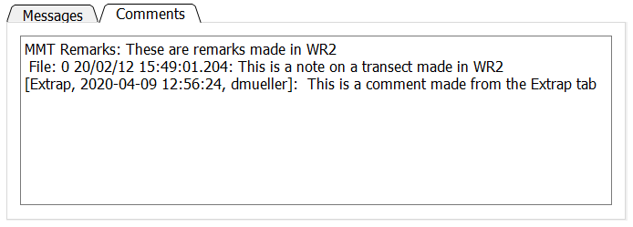
The Comments tab shows comments that were either imported from the data files or have been added in QRev. This tab is for viewing comments only. To add a comment, click the icon in the Toolbar. Remarks made in WR2 are prefaced by “MMT Remarks”. Notes associated with transects in WR2 are prefaced by the file number, the date, and the time. QRev comments are prefaced by the date, time, and user ID of the person making the comment. Comments cannot be edited or deleted and are considered original data. To change a comment, add an additional comment to correct an earlier comment.